7 Regression
7.1 Correlation
Before we start with regression analysis, we will review the basic concept of correlation first. Correlation helps us to determine the degree to which the variation in one variable, X, is related to the variation in another variable, Y.
7.1.1 Correlation coefficient
The correlation coefficient summarizes the strength of the linear relationship between two metric (interval or ratio scaled) variables. Let’s consider a simple example. Say you conduct a survey to investigate the relationship between the attitude towards a city and the duration of residency. The “Attitude” variable can take values between 1 (very unfavorable) and 12 (very favorable), and the “duration of residency” is measured in years. Let’s further assume for this example that the attitude measurement represents an interval scale (although it is usually not realistic to assume that the scale points on an itemized rating scale have the same distance). To keep it simple, let’s further assume that you only asked 12 people. We can create a short data set like this:
library(psych)
attitude <- c(6, 9, 8, 3, 10, 4, 5, 2, 11, 9, 10, 2)
duration <- c(10, 12, 12, 4, 12, 6, 8, 2, 18, 9, 17,
2)
att_data <- data.frame(attitude, duration)
att_data <- att_data[order(-attitude), ]
att_data$respodentID <- c(1:12)
str(att_data)## 'data.frame': 12 obs. of 3 variables:
## $ attitude : num 11 10 10 9 9 8 6 5 4 3 ...
## $ duration : num 18 12 17 12 9 12 10 8 6 4 ...
## $ respodentID: int 1 2 3 4 5 6 7 8 9 10 ...## vars n mean sd median trimmed mad min max range skew kurtosis
## attitude 1 12 6.58 3.32 7.0 6.6 4.45 2 11 9 -0.14 -1.74
## duration 2 12 9.33 5.26 9.5 9.2 4.45 2 18 16 0.10 -1.27
## se
## attitude 0.96
## duration 1.52## attitude duration respodentID
## 9 11 18 1
## 5 10 12 2
## 11 10 17 3
## 2 9 12 4
## 10 9 9 5
## 3 8 12 6
## 1 6 10 7
## 7 5 8 8
## 6 4 6 9
## 4 3 4 10
## 8 2 2 11
## 12 2 2 12Let’s look at the data first. The following graph shows the individual data points for the “duration of residency”” variable, where the y-axis shows the duration of residency in years and the x-axis shows the respondent ID. The blue horizontal line represents the mean of the variable (9.33) and the vertical lines show the distance of the individual data points from the mean.
Figure 1.3: Scores for duration of residency variable
You can see that there are some respondents that have been living in the city longer than average and some respondents that have been living in the city shorter than average. Let’s do the same for the second variable (“Attitude”). Again, the y-axis shows the observed scores for this variable and the x-axis shows the respondent ID.
Figure 1.4: Scores for attitude variable
Again, we can see that some respondents have an above average attitude towards the city (more favorable) and some respondents have a below average attitude towards the city. Let’s combine both variables in one graph now to see if there is some co-movement:
Figure 5.1: Scores for attitude and duration of residency variables
We can see that there is indeed some co-movement here. The variables covary because respondents who have an above (below) average attitude towards the city also appear to have been living in the city for an above (below) average amount of time and vice versa. Correlation helps us to quantify this relationship. Before you proceed to compute the correlation coefficient, you should first look at the data. We usually use a scatterplot to visualize the relationship between two metric variables:
Figure 1.5: Scatterplot for durationand attitute variables
How can we compute the correlation coefficient? Remember that the variance measures the average deviation from the mean of a variable:
\[\begin{equation} \begin{split} s_x^2&=\frac{\sum_{i=1}^{N} (X_i-\overline{X})^2}{N-1} \\ &= \frac{\sum_{i=1}^{N} (X_i-\overline{X})*(X_i-\overline{X})}{N-1} \end{split} \tag{7.1} \end{equation}\]
When we consider two variables, we multiply the deviation for one variable by the respective deviation for the second variable:
\((X_i-\overline{X})*(Y_i-\overline{Y})\)
This is called the cross-product deviation. Then we sum the cross-product deviations:
\(\sum_{i=1}^{N}(X_i-\overline{X})*(Y_i-\overline{Y})\)
… and compute the average of the sum of all cross-product deviations to get the covariance:
\[\begin{equation} Cov(x, y) =\frac{\sum_{i=1}^{N}(X_i-\overline{X})*(Y_i-\overline{Y})}{N-1} \tag{7.2} \end{equation}\]
You can easily compute the covariance manually as follows
x <- att_data$duration
x_bar <- mean(att_data$duration)
y <- att_data$attitude
y_bar <- mean(att_data$attitude)
N <- nrow(att_data)
cov <- (sum((x - x_bar) * (y - y_bar)))/(N - 1)
cov## [1] 16.333333Or you simply use the built-in cov() function:
## [1] 16.333333A positive covariance indicates that as one variable deviates from the mean, the other variable deviates in the same direction. A negative covariance indicates that as one variable deviates from the mean (e.g., increases), the other variable deviates in the opposite direction (e.g., decreases).
However, the size of the covariance depends on the scale of measurement. Larger scale units will lead to larger covariance. To overcome the problem of dependence on measurement scale, we need to convert the covariance to a standard set of units through standardization by dividing the covariance by the standard deviation (similar to how we compute z-scores).
With two variables, there are two standard deviations. We simply multiply the two standard deviations. We then divide the covariance by the product of the two standard deviations to get the standardized covariance, which is known as a correlation coefficient r:
\[\begin{equation} r=\frac{Cov_{xy}}{s_x*s_y} \tag{7.3} \end{equation}\]
This is known as the product moment correlation (r) and it is straight-forward to compute:
## [1] 0.93607782Or you could just use the cor() function:
## attitude duration
## attitude 1.00000000 0.93607782
## duration 0.93607782 1.00000000The properties of the correlation coefficient (‘r’) are:
- ranges from -1 to + 1
- +1 indicates perfect linear relationship
- -1 indicates perfect negative relationship
- 0 indicates no linear relationship
- ± .1 represents small effect
- ± .3 represents medium effect
- ± .5 represents large effect
7.1.2 Significance testing
How can we determine if our two variables are significantly related? To test this, we denote the population moment correlation ρ. Then we test the null of no relationship between variables:
\[H_0:\rho=0\] \[H_1:\rho\ne0\]
The test statistic is:
\[\begin{equation} t=\frac{r*\sqrt{N-2}}{\sqrt{1-r^2}} \tag{7.4} \end{equation}\]
It has a t distribution with n - 2 degrees of freedom. Then, we follow the usual procedure of calculating the test statistic and comparing the test statistic to the critical value of the underlying probability distribution. If the calculated test statistic is larger than the critical value, the null hypothesis of no relationship between X and Y is rejected.
## [1] 8.4144314## [1] 2.2281389## [1] 0.0000075451612Or you can simply use the cor.test() function, which also produces the 95% confidence interval:
cor.test(att_data$attitude, att_data$duration, alternative = "two.sided",
method = "pearson", conf.level = 0.95)##
## Pearson's product-moment correlation
##
## data: att_data$attitude and att_data$duration
## t = 8.41443, df = 10, p-value = 0.0000075452
## alternative hypothesis: true correlation is not equal to 0
## 95 percent confidence interval:
## 0.78260411 0.98228152
## sample estimates:
## cor
## 0.93607782To determine the linear relationship between variables, the data only needs to be measured using interval scales. If you want to test the significance of the association, the sampling distribution needs to be normally distributed (we usually assume this when our data are normally distributed or when N is large). If parametric assumptions are violated, you should use non-parametric tests:
- Spearman’s correlation coefficient: requires ordinal data and ranks the data before applying Pearson’s equation.
- Kendall’s tau: use when N is small or the number of tied ranks is large.
cor.test(att_data$attitude, att_data$duration, alternative = "two.sided",
method = "spearman", conf.level = 0.95)##
## Spearman's rank correlation rho
##
## data: att_data$attitude and att_data$duration
## S = 14.1969, p-value = 0.0000021833
## alternative hypothesis: true rho is not equal to 0
## sample estimates:
## rho
## 0.95036059cor.test(att_data$attitude, att_data$duration, alternative = "two.sided",
method = "kendall", conf.level = 0.95)##
## Kendall's rank correlation tau
##
## data: att_data$attitude and att_data$duration
## z = 3.90948, p-value = 0.000092496
## alternative hypothesis: true tau is not equal to 0
## sample estimates:
## tau
## 0.89602867Report the results:
A Pearson product-moment correlation coefficient was computed to assess the relationship between the duration of residence in a city and the attitude toward the city. There was a positive correlation between the two variables, r = 0.936, n = 12, p < 0.05. A scatterplot summarizes the results (Figure XY).
A note on the interpretation of correlation coefficients:
As we have already seen in chapter 1, correlation coefficients give no indication of the direction of causality. In our example, we can conclude that the attitude toward the city is more positive as the years of residence increases. However, we cannot say that the years of residence cause the attitudes to be more positive. There are two main reasons for caution when interpreting correlations:
- Third-variable problem: there may be other unobserved factors that affect both the ‘attitude towards a city’ and the ‘duration of residency’ variables
- Direction of causality: Correlations say nothing about which variable causes the other to change (reverse causality: attitudes may just as well cause the years of residence variable).
7.2 Regression
Correlations measure relationships between variables (i.e., how much two variables covary). Using regression analysis we can predict the outcome of a dependent variable (Y) from one or more independent variables (X). For example, we could be interested in how many products will we will sell if we increase the advertising expenditures by 1000 Euros? In regression analysis, we fit a model to our data and use it to predict the values of the dependent variable from one predictor variable (bivariate regression) or several predictor variables (multiple regression). The following table shows a comparison of correlation and regression analysis:
| Correlation | Regression | |
|---|---|---|
| Estimated coefficient | Coefficient of correlation (bounded between -1 and +1) | Regression coefficient (not bounded a priori) |
| Interpretation | Linear association between two variables; Association is bidirectional | (Linear) relation between one or more independent variables and dependent variable; Relation is directional |
| Role of theory | Theory neither required nor testable | Theory required and testable |
7.2.1 Simple linear regression
In simple linear regression, we assess the relationship between one dependent (regressand) and one independent (regressor) variable. The goal is to fit a line through a scatterplot of observations in order to find the line that best describes the data (scatterplot).
Suppose you are a marketing research analyst at a music label and your task is to suggest, on the basis of historical data, a marketing plan for the next year that will maximize product sales. The data set that is available to you includes information on the sales of music downloads (units), advertising expenditures (in thousands of Euros), the number of radio plays an artist received per week (airplay), the number of previous releases of an artist (starpower), repertoire origin (country; 0 = local, 1 = international), and genre (1 = rock, 2 = pop, 3 = electronic). Let’s load and inspect the data first:
regression <- read.table("https://raw.githubusercontent.com/IMSMWU/Teaching/master/MRDA2017/music_sales_regression.dat",
sep = "\t", header = TRUE) #read in data
regression$country <- factor(regression$country, levels = c(0:1),
labels = c("local", "international")) #convert grouping variable to factor
regression$genre <- factor(regression$genre, levels = c(1:3),
labels = c("rock", "pop", "electronic")) #convert grouping variable to factor
head(regression)## vars n mean sd median trimmed mad min max range
## sales 1 200 193.20 80.70 200.00 192.69 88.96 10.0 360.00 350.00
## adspend 2 200 614.41 485.66 531.92 560.81 489.09 9.1 2271.86 2262.76
## airplay 3 200 27.50 12.27 28.00 27.46 11.86 0.0 63.00 63.00
## starpower 4 200 6.77 1.40 7.00 6.88 1.48 1.0 10.00 9.00
## genre* 5 200 2.40 0.79 3.00 2.50 0.00 1.0 3.00 2.00
## country* 6 200 1.17 0.38 1.00 1.09 0.00 1.0 2.00 1.00
## skew kurtosis se
## sales 0.04 -0.72 5.71
## adspend 0.84 0.17 34.34
## airplay 0.06 -0.09 0.87
## starpower -1.27 3.56 0.10
## genre* -0.83 -0.91 0.06
## country* 1.74 1.05 0.03As stated above, regression analysis may be used to relate a quantitative response (“dependent variable”) to one or more predictor variables (“independent variables”). In a simple linear regression, we have one dependent and one independent variable and we regress the dependent variable on the independent variable.
Here are a few important questions that we might seek to address based on the data:
- Is there a relationship between advertising budget and sales?
- How strong is the relationship between advertising budget and sales?
- Which other variables contribute to sales?
- How accurately can we estimate the effect of each variable on sales?
- How accurately can we predict future sales?
- Is the relationship linear?
- Is there synergy among the advertising activities?
We may use linear regression to answer these questions. We will see later that the interpretation of the results strongly depends on the goal of the analysis - whether you would like to simply predict an outcome variable or you would like to explain the causal effect of the independent variable on the dependent variable (see chapter 1). Let’s start with the first question and investigate the relationship between advertising and sales.
7.2.1.1 Estimating the coefficients
A simple linear regression model only has one predictor and can be written as:
\[\begin{equation} Y=\beta_0+\beta_1X+\epsilon \tag{7.5} \end{equation}\]
In our specific context, let’s consider only the influence of advertising on sales for now:
\[\begin{equation} Sales=\beta_0+\beta_1*adspend+\epsilon \tag{7.6} \end{equation}\]
The word “adspend” represents data on advertising expenditures that we have observed and β1 (the “slope”“) represents the unknown relationship between advertising expenditures and sales. It tells you by how much sales will increase for an additional Euro spent on advertising. β0 (the”intercept”) is the number of sales we would expect if no money is spent on advertising. Together, β0 and β1 represent the model coefficients or parameters. The error term (ε) captures everything that we miss by using our model, including, (1) misspecifications (the true relationship might not be linear), (2) omitted variables (other variables might drive sales), and (3) measurement error (our measurement of the variables might be imperfect).
Once we have used our training data to produce estimates for the model coefficients, we can predict future sales on the basis of a particular value of advertising expenditures by computing:
\[\begin{equation} \hat{Sales}=\hat{\beta_0}+\hat{\beta_1}*adspend \tag{7.7} \end{equation}\]
We use the hat symbol, ^, to denote the estimated value for an unknown parameter or coefficient, or to denote the predicted value of the response (sales). In practice, β0 and β1 are unknown and must be estimated from the data to make predictions. In the case of our advertising example, the data set consists of the advertising budget and product sales of 200 music songs (n = 200). Our goal is to obtain coefficient estimates such that the linear model fits the available data well. In other words, we fit a line through the scatterplot of observations and try to find the line that best describes the data. The following graph shows the scatterplot for our data, where the black line shows the regression line. The grey vertical lines shows the difference between the predicted values (the regression line) and the observed values. This difference is referred to as the residuals (“e”).
Figure 1.14: Ordinary least squares (OLS)
The estimation of the regression function is based on the idea of the method of least squares (OLS = ordinary least squares). The first step is to calculate the residuals by subtracting the observed values from the predicted values.
\(e_i = Y_i-(\beta_0+\beta_1X_i)\)
This difference is then minimized by minimizing the sum of the squared residuals:
\[\begin{equation} \sum_{i=1}^{N} e_i^2= \sum_{i=1}^{N} [Y_i-(\beta_0+\beta_1X_i)]^2\rightarrow min! \tag{7.8} \end{equation}\]
ei: Residuals (i = 1, 2, …, N)
Yi: Values of the dependent variable (i = 1, 2, …, N)
β0: Intercept
β1: Regression coefficient / slope parameters
Xni: Values of the nth independent variables and the ith observation
N: Number of observations
This is also referred to as the residual sum of squares (RSS), which you may still remember from the previous chapter on ANOVA. Now we need to choose the values for β0 and β1 that minimize RSS. So how can we derive these values for the regression coefficient? The equation for β1 is given by:
\[\begin{equation} \hat{\beta_1}=\frac{COV_{XY}}{s_x^2} \tag{7.9} \end{equation}\]
The exact mathematical derivation of this formula is beyond the scope of this script, but the intuition is to calculate the first derivative of the squared residuals with respect to β1 and set it to zero, thereby finding the β1 that minimizes the term. Using the above formula, you can easily compute β1 using the following code:
## [1] 22672.016## [1] 235860.98## [1] 0.096124486The interpretation of β1 is as follows:
For every extra Euro spent on advertising, sales can be expected to increase by 0.096 units. Or, in other words, if we increase our marketing budget by 1,000 Euros, sales can be expected to increase by 96 units.
Using the estimated coefficient for β1, it is easy to compute β0 (the intercept) as follows:
\[\begin{equation} \hat{\beta_0}=\overline{Y}-\hat{\beta_1}\overline{X} \tag{7.10} \end{equation}\]
The R code for this is:
## [1] 134.13994The interpretation of β0 is as follows:
If we spend no money on advertising, we would expect to sell 134.14 (134) units.
You may also verify this based on a scatterplot of the data. The following plot shows the scatterplot including the regression line, which is estimated using OLS.
ggplot(regression, mapping = aes(adspend, sales)) +
geom_point(shape = 1) + geom_smooth(method = "lm",
fill = "blue", alpha = 0.1) + labs(x = "Advertising expenditures (EUR)",
y = "Number of sales") + theme_bw()
Figure 1.17: Scatterplot
You can see that the regression line intersects with the y-axis at 134.14, which corresponds to the expected sales level when advertising expenditure (on the x-axis) is zero (i.e., the intercept β0). The slope coefficient (β1) tells you by how much sales (on the y-axis) would increase if advertising expenditures (on the x-axis) are increased by one unit.
7.2.1.2 Significance testing
In a next step, we assess if the effect of advertising on sales is statistically significant. This means that we test the null hypothesis H0: “There is no relationship between advertising and sales” versus the alternative hypothesis H1: “The is some relationship between advertising and sales”. Or, to state this formally:
\[H_0:\beta_1=0\] \[H_1:\beta_1\ne0\]
How can we test if the effect is statistically significant? Recall the generalized equation to derive a test statistic:
\[\begin{equation} test\ statistic = \frac{effect}{error} \tag{7.11} \end{equation}\]
The effect is given by the β1 coefficient in this case. To compute the test statistic, we need to come up with a measure of uncertainty around this estimate (the error). This is because we use information from a sample to estimate the least squares line to make inferences regarding the regression line in the entire population. Since we only have access to one sample, the regression line will be slightly different every time we take a different sample from the population. This is sampling variation and it is perfectly normal! It just means that we need to take into account the uncertainty around the estimate, which is achieved by the standard error. Thus, the test statistic for our hypothesis is given by:
\[\begin{equation} t = \frac{\hat{\beta_1}}{SE(\hat{\beta_1})} \tag{7.12} \end{equation}\]
After calculating the test statistic, we compare its value to the values that we would expect to find if there was no effect based on the t-distribution. In a regression context, the degrees of freedom are given by N - p - 1 where N is the sample size and p is the number of predictors. In our case, we have 200 observations and one predictor. Thus, the degrees of freedom is 200 - 1 - 1 = 198. In the regression output below, R provides the exact probability of observing a t value of this magnitude (or larger) if the null hypothesis was true. This probability - as we already saw in chapter 6 - is the p-value. A small p-value indicates that it is unlikely to observe such a substantial association between the predictor and the outcome variable due to chance in the absence of any real association between the predictor and the outcome.
To estimate the regression model in R, you can use the lm() function. Within the function, you first specify the dependent variable (“sales”) and independent variable (“adspend”) separated by a ~ (tilde). As mentioned previously, this is known as formula notation in R. The data = regression argument specifies that the variables come from the data frame named “regression”. Strictly speaking, you use the lm() function to create an object called “simple_regression,” which holds the regression output. You can then view the results using the summary() function:
simple_regression <- lm(sales ~ adspend, data = regression) #estimate linear model
summary(simple_regression) #summary of results##
## Call:
## lm(formula = sales ~ adspend, data = regression)
##
## Residuals:
## Min 1Q Median 3Q Max
## -152.9493 -43.7961 -0.3933 37.0404 211.8658
##
## Coefficients:
## Estimate Std. Error t value Pr(>|t|)
## (Intercept) 134.1399378 7.5365747 17.7985 < 0.00000000000000022 ***
## adspend 0.0961245 0.0096324 9.9793 < 0.00000000000000022 ***
## ---
## Signif. codes: 0 '***' 0.001 '**' 0.01 '*' 0.05 '.' 0.1 ' ' 1
##
## Residual standard error: 65.991 on 198 degrees of freedom
## Multiple R-squared: 0.33465, Adjusted R-squared: 0.33129
## F-statistic: 99.587 on 1 and 198 DF, p-value: < 0.000000000000000222Note that the estimated coefficients for β0 (134.14) and β1 (0.096) correspond to the results of our manual computation above. The associated t-values and p-values are given in the output. The t-values are larger than the critical t-values for the 95% confidence level, since the associated p-values are smaller than 0.05. In case of the coefficient for β1, this means that the probability of an association between the advertising and sales of the observed magnitude (or larger) is smaller than 0.05, if the value of β1 was, in fact, 0. This finding leads us to reject the null hypothesis of no association between advertising and sales.
The coefficients associated with the respective variables represent point estimates. To obtain a better understanding of the range of values that the coefficients could take, it is helpful to compute confidence intervals. A 95% confidence interval is defined as a range of values such that with a 95% probability, the range will contain the true unknown value of the parameter. For example, for β1, the confidence interval can be computed as.
\[\begin{equation} CI = \hat{\beta_1}\pm(t_{1-\frac{\alpha}{2}}*SE(\beta_1)) \tag{7.13} \end{equation}\]
It is easy to compute confidence intervals in R using the confint() function. You just have to provide the name of you estimated model as an argument:
## 2.5 % 97.5 %
## (Intercept) 119.277680821 149.00219480
## adspend 0.077129291 0.11511968For our model, the 95% confidence interval for β0 is [119.28,149], and the 95% confidence interval for β1 is [0.08,0.12]. Thus, we can conclude that when we do not spend any money on advertising, sales will be somewhere between 119 and 149 units on average. In addition, for each increase in advertising expenditures by one Euro, there will be an average increase in sales of between 0.08 and 0.12. If you revisit the graphic depiction of the regression model above, the uncertainty regarding the intercept and slope parameters can be seen in the confidence bounds (blue area) around the regression line.
7.2.1.3 Assessing model fit
Once we have rejected the null hypothesis in favor of the alternative hypothesis, the next step is to investigate how well the model represents (“fits”) the data. How can we assess the model fit?
- First, we calculate the fit of the most basic model (i.e., the mean)
- Then, we calculate the fit of the best model (i.e., the regression model)
- A good model should fit the data significantly better than the basic model
- R2: Represents the percentage of the variation in the outcome that can be explained by the model
- The F-ratio measures how much the model has improved the prediction of the outcome compared to the level of inaccuracy in the model
Similar to ANOVA, the calculation of model fit statistics relies on estimating the different sum of squares values. SST is the difference between the observed data and the mean value of Y (aka. total variation). In the absence of any other information, the mean value of Y (\(\overline{Y}\)) represents the best guess on where a particular observation \(Y_{i}\) at a given level of advertising will fall:
\[\begin{equation} SS_T= \sum_{i=1}^{N} (Y_i-\overline{Y})^2 \tag{7.14} \end{equation}\]
The following graph shows the total sum of squares:
Figure 1.20: Total sum of squares
Based on our linear model, the best guess about the sales level at a given level of advertising is the predicted value \(\hat{Y}_i\). The model sum of squares (SSM) therefore has the mathematical representation:
\[\begin{equation} SS_M= \sum_{i=1}^{N} (\hat{Y}_i-\overline{Y})^2 \tag{7.15} \end{equation}\]
The model sum of squares represents the improvement in prediction resulting from using the regression model rather than the mean of the data. The following graph shows the model sum of squares for our example:
Figure 1.21: Ordinary least squares (OLS)
The residual sum of squares (SSR) is the difference between the observed data points (\(Y_{i}\)) and the predicted values along the regression line (\(\hat{Y}_{i}\)), i.e., the variation not explained by the model.
\[\begin{equation} SS_R= \sum_{i=1}^{N} ({Y}_{i}-\hat{Y}_{i})^2 \tag{7.16} \end{equation}\]
The following graph shows the residual sum of squares for our example:
Figure 1.22: Ordinary least squares (OLS)
Based on these statistics, we can determine have well the model fits the data as we will see next.
R-squared
The R2 statistic represents the proportion of variance that is explained by the model and is computed as:
\[\begin{equation} R^2= \frac{SS_M}{SS_T} \tag{7.16} \end{equation}\]
It takes values between 0 (very bad fit) and 1 (very good fit). Note that when the goal of your model is to predict future outcomes, a “too good” model fit can pose severe challenges. The reason is that the model might fit your specific sample so well, that it will only predict well within the sample but not generalize to other samples. This is called overfitting and it shows that there is a trade-off between model fit and out-of-sample predictive ability of the model, if the goal is to predict beyond the sample. We will come back to this point later in this chapter.
You can get a first impression of the fit of the model by inspecting the scatter plot as can be seen in the plot below. If the observations are highly dispersed around the regression line (left plot), the fit will be lower compared to a data set where the values are less dispersed (right plot).
Figure 1.23: Good vs. bad model fit
The R2 statistic is reported in the regression output (see above). However, you could also extract the relevant sum of squares statistics from the regression object using the anova() function to compute it manually:
## Analysis of Variance Table
##
## Response: sales
## Df Sum Sq Mean Sq F value Pr(>F)
## adspend 1 433688 433688 99.6 <0.0000000000000002 ***
## Residuals 198 862264 4355
## ---
## Signif. codes: 0 '***' 0.001 '**' 0.01 '*' 0.05 '.' 0.1 ' ' 1Now we can compute R2 in the same way that we have computed Eta2 in the last section:
r2 <- anova(simple_regression)$"Sum Sq"[1]/(anova(simple_regression)$"Sum Sq"[1] +
anova(simple_regression)$"Sum Sq"[2]) #compute R2
r2## [1] 0.33Adjusted R-squared
Due to the way the R2 statistic is calculated, it will never decrease if a new explanatory variable is introduced into the model. This means that every new independent variable either doesn’t change the R2 or increases it, even if there is no real relationship between the new variable and the dependent variable. Hence, one could be tempted to just add as many variables as possible to increase the R2 and thus obtain a “better” model. However, this actually only leads to more noise and therefore a worse model.
To account for this, there exists a test statistic closely related to the R2, the adjusted R2. It can be calculated as follows:
\[\begin{equation} \overline{R^2} = 1 - (1 - R^2)\frac{n-1}{n - k - 1} \tag{7.17} \end{equation}\]
where n is the total number of observations and k is the total number of explanatory variables. The adjusted R2 is equal to or less than the regular R2 and can be negative. It will only increase if the added variable adds more explanatory power than one would expect by pure chance. Essentially, it contains a “penalty” for including unnecessary variables and therefore favors more parsimonious models. As such, it is a measure of suitability, good for comparing different models and is very useful in the model selection stage of a project. In R, the standard lm() function automatically also reports the adjusted R2 as you can see above.
F-test
Similar to the ANOVA in chapter 6, another significance test is the F-test, which tests the null hypothesis:
\[H_0:R^2=0\]
Or, to state it slightly differently:
\[H_0:\beta_1=\beta_2=\beta_3=\beta_k=0\]
This means that, similar to the ANOVA, we test whether any of the included independent variables has a significant effect on the dependent variable. So far, we have only included one independent variable, but we will extend the set of predictor variables below.
The F-test statistic is calculated as follows:
\[\begin{equation} F=\frac{\frac{SS_M}{k}}{\frac{SS_R}{(n-k-1)}}=\frac{MS_M}{MS_R} \tag{7.16} \end{equation}\]
which has a F distribution with k (number of predictors) and (n — k — 1) degrees of freedom. In other words, you divide the systematic (“explained”) variation due to the predictor variables by the unsystematic (“unexplained”) variation.
The result of the F-test is provided in the regression output. However, you might manually compute the F-test using the ANOVA results from the model:
## Analysis of Variance Table
##
## Response: sales
## Df Sum Sq Mean Sq F value Pr(>F)
## adspend 1 433688 433688 99.587 < 0.00000000000000022 ***
## Residuals 198 862264 4355
## ---
## Signif. codes: 0 '***' 0.001 '**' 0.01 '*' 0.05 '.' 0.1 ' ' 1f_calc <- anova(simple_regression)$"Mean Sq"[1]/anova(simple_regression)$"Mean Sq"[2] #compute F
f_calc## [1] 99.58687## [1] 3.888853## [1] TRUE7.2.1.4 Using the model
After fitting the model, we can use the estimated coefficients to predict sales for different values of advertising. Suppose you want to predict sales for a new product, and the company plans to spend 800 Euros on advertising. How much will it sell? You can easily compute this either by hand:
\[\hat{sales}=134.134 + 0.09612*800=211\]
… or by extracting the estimated coefficients from the model summary:
summary(simple_regression)$coefficients[1,1] + # the intercept
summary(simple_regression)$coefficients[2,1]*800 # the slope * 800## [1] 211The predicted value of the dependent variable is 211 units, i.e., the product will (on average) sell 211 units.
7.2.2 Multiple linear regression
Multiple linear regression is a statistical technique that simultaneously tests the relationships between two or more independent variables and an interval-scaled dependent variable. The general form of the equation is given by:
\[\begin{equation} Y=(\beta_0+\beta_1*X_1+\beta_2*X_2+\beta_n*X_n)+\epsilon \tag{7.5} \end{equation}\]
Again, we aim to find the linear combination of predictors that correlate maximally with the outcome variable. Note that if you change the composition of predictors, the partial regression coefficient of an independent variable will be different from that of the bivariate regression coefficient. This is because the regressors are usually correlated, and any variation in Y that was shared by X1 and X2 was attributed to X1. The interpretation of the partial regression coefficients is the expected change in Y when X is changed by one unit and all other predictors are held constant.
Let’s extend the previous example. Say, in addition to the influence of advertising, you are interested in estimating the influence of radio airplay on the number of album downloads. The corresponding equation would then be given by:
\[\begin{equation} Sales=\beta_0+\beta_1*adspend+\beta_2*airplay+\epsilon \tag{7.6} \end{equation}\]
The words “adspend” and “airplay” represent data that we have observed on advertising expenditures and number of radio plays, and β1 and β2 represent the unknown relationship between sales and advertising expenditures and radio airplay, respectively. The corresponding coefficients tell you by how much sales will increase for an additional Euro spent on advertising (when radio airplay is held constant) and by how much sales will increase for an additional radio play (when advertising expenditures are held constant). Thus, we can make predictions about album sales based not only on advertising spending, but also on radio airplay.
With several predictors, the partitioning of sum of squares is the same as in the bivariate model, except that the model is no longer a 2-D straight line. With two predictors, the regression line becomes a 3-D regression plane. In our example:
Figure 4.1: Regression plane
Like in the bivariate case, the plane is fitted to the data with the aim to predict the observed data as good as possible. The deviation of the observations from the plane represent the residuals (the error we make in predicting the observed data from the model). Note that this is conceptually the same as in the bivariate case, except that the computation is more complex (we won’t go into details here). The model is fairly easy to plot using a 3-D scatterplot, because we only have two predictors. While multiple regression models that have more than two predictors are not as easy to visualize, you may apply the same principles when interpreting the model outcome:
- Total sum of squares (SST) is still the difference between the observed data and the mean value of Y (total variation)
- Residual sum of squares (SSR) is still the difference between the observed data and the values predicted by the model (unexplained variation)
- Model sum of squares (SSM) is still the difference between the values predicted by the model and the mean value of Y (explained variation)
- R measures the multiple correlation between the predictors and the outcome
- R2 is the amount of variation in the outcome variable explained by the model
Estimating multiple regression models is straightforward using the lm() function. You just need to separate the individual predictors on the right hand side of the equation using the + symbol. For example, the model:
\[\begin{equation} Sales=\beta_0+\beta_1*adspend+\beta_2*airplay+\beta_3*starpower+\epsilon \tag{7.6} \end{equation}\]
could be estimated as follows:
multiple_regression <- lm(sales ~ adspend + airplay +
starpower, data = regression) #estimate linear model
summary(multiple_regression) #summary of results##
## Call:
## lm(formula = sales ~ adspend + airplay + starpower, data = regression)
##
## Residuals:
## Min 1Q Median 3Q Max
## -121.32 -28.34 -0.45 28.97 144.13
##
## Coefficients:
## Estimate Std. Error t value Pr(>|t|)
## (Intercept) -26.61296 17.35000 -1.53 0.13
## adspend 0.08488 0.00692 12.26 < 0.0000000000000002 ***
## airplay 3.36743 0.27777 12.12 < 0.0000000000000002 ***
## starpower 11.08634 2.43785 4.55 0.0000095 ***
## ---
## Signif. codes: 0 '***' 0.001 '**' 0.01 '*' 0.05 '.' 0.1 ' ' 1
##
## Residual standard error: 47 on 196 degrees of freedom
## Multiple R-squared: 0.665, Adjusted R-squared: 0.66
## F-statistic: 129 on 3 and 196 DF, p-value: <0.0000000000000002The interpretation of the coefficients is as follows:
- adspend (β1): when advertising expenditures increase by 1 Euro, sales will increase by 0.085 units
- airplay (β2): when radio airplay increases by 1 play per week, sales will increase by 3.367 units
- starpower (β3): when the number of previous albums increases by 1, sales will increase by 11.086 units
The associated t-values and p-values are also given in the output. You can see that the p-values are smaller than 0.05 for all three coefficients. Hence, all effects are “significant”. This means that if the null hypothesis was true (i.e., there was no effect between the variables and sales), the probability of observing associations of the estimated magnitudes (or larger) is very small (e.g., smaller than 0.05).
Again, to get a better feeling for the range of values that the coefficients could take, it is helpful to compute confidence intervals.
## 2.5 % 97.5 %
## (Intercept) -60.830 7.604
## adspend 0.071 0.099
## airplay 2.820 3.915
## starpower 6.279 15.894What does this tell you? Recall that a 95% confidence interval is defined as a range of values such that with a 95% probability, the range will contain the true unknown value of the parameter. For example, for β3, the confidence interval is [6.2785522,15.8941182]. Thus, although we have computed a point estimate of 11.086 for the effect of starpower on sales based on our sample, the effect might actually just as well take any other value within this range, considering the sample size and the variability in our data. You could also visualize the output from your regression model including the confidence intervals using the ggstatsplot package as follows:
library(ggstatsplot)
ggcoefstats(x = multiple_regression, title = "Sales predicted by adspend, airplay, & starpower")Figure 4.3: Confidence intervals for regression model
The output also tells us that 66.4667687% of the variation can be explained by our model. You may also visually inspect the fit of the model by plotting the predicted values against the observed values. We can extract the predicted values using the predict() function. So let’s create a new variable yhat, which contains those predicted values.
We can now use this variable to plot the predicted values against the observed values. In the following plot, the model fit would be perfect if all points would fall on the diagonal line. The larger the distance between the points and the line, the worse the model fit. In other words, if all points would fall exactly on the diagonal line, the model would perfectly predict the observed values.
ggplot(regression,aes(yhat,sales)) +
geom_point(size=2,shape=1) + #Use hollow circles
scale_x_continuous(name="predicted values") +
scale_y_continuous(name="observed values") +
geom_abline(intercept = 0, slope = 1) +
theme_bw()Figure 6.5: Model fit
Partial plots
In the context of a simple linear regression (i.e., with a single independent variable), a scatter plot of the dependent variable against the independent variable provides a good indication of the nature of the relationship. If there is more than one independent variable, however, things become more complicated. The reason is that although the scatter plot still show the relationship between the two variables, it does not take into account the effect of the other independent variables in the model. Partial regression plot show the effect of adding another variable to a model that already controls for the remaining variables in the model. In other words, it is a scatterplot of the residuals of the outcome variable and each predictor when both variables are regressed separately on the remaining predictors. As an example, consider the effect of advertising expenditures on sales. In this case, the partial plot would show the effect of adding advertising expenditures as an explanatory variable while controlling for the variation that is explained by airplay and starpower in both variables (sales and advertising). Think of it as the purified relationship between advertising and sales that remains after controlling for other factors. The partial plots can easily be created using the avPlots() function from the car package:

Figure 6.7: Partial plots
Using the model
After fitting the model, we can use the estimated coefficients to predict sales for different values of advertising, airplay, and starpower. Suppose you would like to predict sales for a new music album with advertising expenditures of 800, airplay of 30 and starpower of 5. How much will it sell?
\[\hat{sales}=−26.61 + 0.084 * 800 + 3.367*30 + 11.08 ∗ 5= 197.74\]
… or by extracting the estimated coefficients:
summary(multiple_regression)$coefficients[1, 1] + summary(multiple_regression)$coefficients[2,
1] * 800 + summary(multiple_regression)$coefficients[3,
1] * 30 + summary(multiple_regression)$coefficients[4,
1] * 5## [1] 198The predicted value of the dependent variable is 198 units, i.e., the product will sell 198 units.
Comparing effects
Using the output from the regression model above, it is difficult to compare the effects of the independent variables because they are all measured on different scales (Euros, radio plays, releases). Standardized regression coefficients can be used to judge the relative importance of the predictor variables. Standardization is achieved by multiplying the unstandardized coefficient by the ratio of the standard deviations of the independent and dependent variables:
\[\begin{equation} B_{k}=\beta_{k} * \frac{s_{x_k}}{s_y} \tag{7.18} \end{equation}\]
Hence, the standardized coefficient will tell you by how many standard deviations the outcome will change as a result of a one standard deviation change in the predictor variable. Standardized coefficients can be easily computed using the lm.beta() function from the lm.beta package.
##
## Call:
## lm(formula = sales ~ adspend + airplay + starpower, data = regression)
##
## Standardized Coefficients::
## (Intercept) adspend airplay starpower
## NA 0.51 0.51 0.19The results show that for adspend and airplay, a change by one standard deviation will result in a 0.51 standard deviation change in sales, whereas for starpower, a one standard deviation change will only lead to a 0.19 standard deviation change in sales. Hence, while the effects of adspend and airplay are comparable in magnitude, the effect of starpower is less strong.
7.3 Potential problems
Once you have built and estimated your model it is important to run diagnostics to ensure that the results are accurate. In the following section we will discuss common problems.
7.3.1 Outliers
Outliers are data points that differ vastly from the trend. They can introduce bias into a model due to the fact that they alter the parameter estimates. Consider the example below. A linear regression was performed twice on the same data set, except during the second estimation the two green points were changed to be outliers by being moved to the positions indicated in red. The solid red line is the regression line based on the unaltered data set, while the dotted line was estimated using the altered data set. As you can see the second regression would lead to different conclusions than the first. Therefore it is important to identify outliers and further deal with them.
Figure 4.6: Effects of outliers
One quick way to visually detect outliers is by creating a scatterplot (as above) to see whether anything seems off. Another approach is to inspect the studentized residuals. If there are no outliers in your data, about 95% will be between -2 and 2, as per the assumptions of the normal distribution. Values well outside of this range are unlikely to happen by chance and warrant further inspection. As a rule of thumb, observations whose studentized residuals are greater than 3 in absolute values are potential outliers.
The studentized residuals can be obtained in R with the function rstudent(). We can use this function to create a new variable that contains the studentized residuals e music sales regression from before yields the following residuals:
A good way to visually inspect the studentized residuals is to plot them in a scatterplot and roughly check if most of the observations are within the -3, 3 bounds.
plot(1:nrow(regression), regression$stud_resid, ylim = c(-3.3,
3.3)) #create scatterplot
abline(h = c(-3, 3), col = "red", lty = 2) #add reference linesFigure 4.8: Plot of the studentized residuals
To identify potentially influential observations in our data set, we can apply a filter to our data:
After a detailed inspection of the potential outliers, you might decide to delete the affected observations from the data set or not. If an outlier has resulted from an error in data collection, then you might simply remove the observation. However, even though data may have extreme values, they might not be influential to determine a regression line. That means, the results wouldn’t be much different if we either include or exclude them from analysis. This means that the decision of whether to exclude an outlier or not is closely related to the question whether this observation is an influential observation, as will be discussed next.
7.3.2 Influential observations
Related to the issue of outliers is that of influential observations, meaning observations that exert undue influence on the parameters. It is possible to determine whether or not the results are driven by an influential observation by calculating how far the predicted values for your data would move if the model was fitted without this particular observation. This calculated total distance is called Cook’s distance. To identify influential observations, we can inspect the respective plots created from the model output. A rule of thumb to determine whether an observation should be classified as influential or not is to look for observation with a Cook’s distance > 1 (although opinions vary on this). The following plot can be used to see the Cook’s distance associated with each data point:
Figure 7.1: Cook’s distance
It is easy to see that none of the Cook’s distance values is close to the critical value of 1. Another useful plot to identify influential observations is plot number 5 from the output:
Figure 7.2: Residuals vs. Leverage
In this plot, we look for cases outside of a dashed line, which represents Cook’s distance. Lines for Cook’s distance thresholds of 0.5 and 1 are included by default. In our example, this line is not even visible, since the Cook’s distance values are far away from the critical values. Generally, you would watch out for outlying values at the upper right corner or at the lower right corner of the plot. Those spots are the places where cases can be influential against a regression line. In our example, there are no influential cases.
To see how influential observations can impact your regression, have a look at this example.
To summarize, if you detected outliers in your data, you should test if these observations exert undue influence on your results using the Cook’s distance statistic as described above. If you detect observations which bias your results, you should remove these observations.
7.3.3 Non-linearity
An important underlying assumption for OLS is that of linearity, meaning that the relationship between the dependent and the independent variable can be reasonably approximated in linear terms. One quick way to assess whether a linear relationship can be assumed is to inspect the added variable plots that we already came across earlier:
Figure 6.1: Partial plots
In our example, it appears that linear relationships can be reasonably assumed. Please note, however, that the linear model implies two things:
- Constant marginal returns
- Elasticities increase with X
These assumptions may not be justifiable in certain contexts. As an example, consider the effect of marketing expenditures on sales. The linear model assumes that if you change your advertising expenditures from, say 10€ to 11€, this will change sales by the same amount as if you would change your marketing expenditure from, say 100,000€ to 100,001€. This is what we mean by constant marginal returns - irrespective of the level of advertising, spending an additional Euro on advertising will change sales by the same amount. Or consider the effect of price on sales. A linear model assumes that changing the price from, say 10€ to 11€, will change the sales by the same amount as increasing the price from, say 20€ to 21€. An elasticity tells you the relative change in the outcome variable (e.g., sales) due to a relative change in the predictor variable. For example, if we change our advertising expenditures by 1%, sales will change by XY%. As we have seen, the linear model assumes constant marginal returns, which implies that the elasticity increases with the level of the independent variable. In our example, advertising becomes relatively more effective since as we move to higher levels of advertising expenditures, a relatively smaller change in advertising expenditure will yield the same return.
In marketing applications, it is often more realistic to assume decreasing marginal returns, meaning that the return from an increase in advertising is decreasing with increasing levels of advertising (e.g., and increase in advertising expenditures from 10€ to 11€ will lead to larger changes in sales, compared to a change from, say 100,000€ to 100,001€). We will see how to implement such a model further below in the section on extensions of the non-linear model.
To summarize, if you find indications that the linear specification might not represent your data well, you should consider a non-linear specification, which we will cover below. One popular and easy way to implement a non-linear specification in marketing applications is the so-called log-log model, where you take the logarithm of the dependent variable and independent variable(s). This type of model allows for decreasing marginal returns and yields constant elasticity, which is more realistic in many marketing settings. Constant elasticity means that a 1% change in the independent variable yields the same relative return for different levels of the independent variable. If you are unsure which model specification represents your data better, you can also compare different model specifications, e.g., by comparing the explained variance of the models (the better fitting model explains more of the variation in your data), and then opt for the specification that fits your data best.
7.3.4 Non-constant error variance
The following video summarizes how to identify non-constant error variance in R
Another important assumption of the linear model is that the error terms have a constant variance (i.e., homoskedasticity). The following plot from the model output shows the residuals (the vertical distance from an observed value to the predicted values) versus the fitted values (the predicted value from the regression model). If all the points fell exactly on the dashed grey line, it would mean that we have a perfect prediction. The residual variance (i.e., the spread of the values on the y-axis) should be similar across the scale of the fitted values on the x-axis.
Figure 4.10: Residuals vs. fitted values
In our case, this appears to be the case. You can identify non-constant variances in the errors (i.e., heteroscedasticity) from the presence of a funnel shape in the above plot. When the assumption of constant error variances is not met, this might be due to a misspecification of your model (e.g., the relationship might not be linear). In these cases, it often helps to transform your data (e.g., using log-transformations). The red line also helps you to identify potential misspecification of your model. It is a smoothed curve that passes through the residuals and if it lies close to the gray dashed line (as in our case) it suggest a correct specification. If the line would deviate from the dashed grey line a lot (e.g., a U-shape or inverse U-shape), it would suggest that the linear model specification is not reasonable and you should try different specifications. You can also test for heterogskedasticity in you regression model by using the Breusch-Pagan test, which has the null hypothesis that the error variances are equal (i.e., homoskedasticity) versus the alternative that the error variances are not equal (i.e., heteroskedasticity). The test can be implemented using the bptest() function from the lmtest package.
##
## studentized Breusch-Pagan test
##
## data: multiple_regression
## BP = 6, df = 3, p-value = 0.1As the p-value is larger than 0.05, we cannot reject the null hypothesis of equal error variances so that the assumption of homoskedasticity is met.
If OLS is performed despite heteroscedasticity, the estimates of the coefficient will still be correct on average. However, the estimator is inefficient, meaning that the standard error is wrong, which will impact the significance tests (i.e., the p-values will be wrong).
Assume that the test would have suggested a violation of the assumption of homoskedasticity - how could you proceed in this case? In the presence of heteroskedasticity, you could rely on robust regression methods, which correct the standard errors. You could implement a robust regression model in R using the coeftest() function from the sandwich package as follows:
##
## t test of coefficients:
##
## Estimate Std. Error t value Pr(>|t|)
## (Intercept) -26.61296 16.17045 -1.65 0.1
## adspend 0.08488 0.00693 12.25 < 0.0000000000000002 ***
## airplay 3.36743 0.31510 10.69 < 0.0000000000000002 ***
## starpower 11.08634 2.24743 4.93 0.0000017 ***
## ---
## Signif. codes: 0 '***' 0.001 '**' 0.01 '*' 0.05 '.' 0.1 ' ' 1As you can see, the standard errors (and thus the t-values and p-values) are different compared to the non-robust specification above while the coefficients remain unchanged. However, the difference in this example is not too large since the Breusch-Pagan test suggested the presence of homoskedasticity and we could thus rely on the standard output.
To summarize, you can inspect if the assumption of homoskedasticity is met using the residual plot and the Breusch-Pagan test. If the assumption is violated, you should try to transform your data (e.g., using a log-transformation) first and see if this solves the problem. If the problem persists, you can rely on the robust standard errors as it is shown in the example above.
7.3.5 Non-normally distributed errors
Another assumption of OLS is that the error term is normally distributed. This can be a reasonable assumption for many scenarios, but we still need a way to check if it is actually the case. As we can not directly observe the actual error term, we have to work with the next best thing - the residuals.
A quick way to assess whether a given sample is approximately normally distributed is by using Q-Q plots. These plot the theoretical position of the observations (under the assumption that they are normally distributed) against the actual position. The plot below is created by the model output and shows the residuals in a Q-Q plot. As you can see, most of the points roughly follow the theoretical distribution, as given by the straight line. If most of the points are close to the line, the data is approximately normally distributed.
Figure 4.12: Q-Q plot
Another way to check for normal distribution of the data is to employ statistical tests that test the null hypothesis that the data is normally distributed, such as the Shapiro–Wilk test. We can extract the residuals from our model using the resid() function and apply the shapiro.test() function to it:
##
## Shapiro-Wilk normality test
##
## data: resid(multiple_regression)
## W = 1, p-value = 0.7As you can see, we can not reject the H0 of normally distributed residuals, which means that we can assume the residuals to be approximately normally distributed in our example.
When the assumption of normally distributed errors is not met, this might again be due to a misspecification of your model, in which case it might help to transform your data (e.g., using log-transformations). If transforming your data doesn’t solve the issue, you may use bootstrapping to obtain corrected results. Bootstrapping is a so-called resampling method in which we use repeated random sampling with replacement to estimate the sampling distribution based on the sample itself, rather than relying on some assumptions about the shape of the sampling distribution to determine the probability of obtaining a test statistic of a particular magnitude. In other words, the data from our sample are treated as the population from which smaller random samples (so-called bootstrap samples) are repeatedly taken with replacement. The statistic of interest, e.g., the regression coefficients in our example, is calculated in each sample, and by taking many samples, the sampling distribution can be estimated. Similar to the simulations we did in chapter 5, the standard error of the statistic can be estimated using the standard deviation of the sampling distribution. Once we have computed the standard error, we can use it to compute the confidence intervals and significance tests. You can find a description of how to implement this procedure in R e.g., here).
Essentially, we can use the boot() function contained in the boot package to obtain the bootstrapped results. However, we need to pass this function a statistic to apply the bootstrapping on - in our case, this would be the coefficients from our regression model. To make this easier, we can write a function that returns the coefficients from the model for every bootstrap sample that we take. In the following code block, we specify a function called bs(), which does exactly this (don’t worry if you don’t understand all the details - its basically just another function we can use to automate certain steps in the analysis, only that in this case we have written the function ourselves rather than relying on functions contained in existing packages).
# function to obtain regression coefficients
bs <- function(formula, data, indices) {
d <- data[indices, ] # allows boot to select sample
fit <- lm(formula, data = d)
return(coef(fit))
}Now that we have specified this function, we can use it within the boot function to obtained the bootstrapped results for the regression coefficients. To do this, we first load the boot package and use the boot function by specifying the following arguments:
- data: the data set we use (the regression data set in our example)
- statistic: the statistic(s) we would like to bootstrap (in our example, we use the function we have specified above to obtain the regression coefficients)
- R: the number of bootstrap samples to use (we will use 2000 samples)
- formula: the regression equation from which we obtain the coefficients for the bootstrapping procedure
We create an object called boot_out, which contains the output from the bootstrapping.
# If the residuals do not follow a normal
# distribution, transform the data or use
# bootstrapping
library(boot)
# bootstrapping with 2000 replications
boot_out <- boot(data = regression, statistic = bs,
R = 2000, formula = sales ~ adspend + airplay +
starpower)In a next step, let’s extract the 95% confidence intervals for the regression coefficients. The intercept is the first element in the boot_out object and we can use the boot.ci() function and use argument index=1 to obtain the bootstrapped confidence interval for the intercept. The type argument specifies the type of confidence interval we would like to obtain (in this case, we use bias corrected and accelerated, i.e., bca):
## BOOTSTRAP CONFIDENCE INTERVAL CALCULATIONS
## Based on 2000 bootstrap replicates
##
## CALL :
## boot.ci(boot.out = boot_out, type = "bca", index = 1)
##
## Intervals :
## Level BCa
## 95% (-57.3, 7.8 )
## Calculations and Intervals on Original ScaleWe can obtain the confidence intervals for the remaining coefficients in the same way:
## BOOTSTRAP CONFIDENCE INTERVAL CALCULATIONS
## Based on 2000 bootstrap replicates
##
## CALL :
## boot.ci(boot.out = boot_out, type = "bca", index = 2)
##
## Intervals :
## Level BCa
## 95% ( 0.071, 0.098 )
## Calculations and Intervals on Original Scale## BOOTSTRAP CONFIDENCE INTERVAL CALCULATIONS
## Based on 2000 bootstrap replicates
##
## CALL :
## boot.ci(boot.out = boot_out, type = "bca", index = 3)
##
## Intervals :
## Level BCa
## 95% ( 2.7, 3.9 )
## Calculations and Intervals on Original Scale## BOOTSTRAP CONFIDENCE INTERVAL CALCULATIONS
## Based on 2000 bootstrap replicates
##
## CALL :
## boot.ci(boot.out = boot_out, type = "bca", index = 4)
##
## Intervals :
## Level BCa
## 95% ( 6.5, 15.3 )
## Calculations and Intervals on Original ScaleAs usual, we can judge the significance of a coefficient by inspecting whether the null hypothesis (0 in this case) is contained in the intervals. As can be seen, zero is not included in any of the intervals leading us to conclude that all of the predictor variables have a significant effect on the outcome variable.
We could also compare the bootstrapped confidence intervals to the once we obtained from the model without bootstrapping.
## 2.5 % 97.5 %
## (Intercept) -60.830 7.604
## adspend 0.071 0.099
## airplay 2.820 3.915
## starpower 6.279 15.894As you can see, the bootstrapped confidence interval is very similar to the once obtained without bootstrapping, which is not unexpected since in our example, the tests indicated that our assumptions about the distribution of errors is actually met so that we wouldn’t have needed to apply the bootstrapping. You could also inspect the distribution of the obtained regression coefficients from the 2000 bootstrap samples using the plot() function and passing it the respective index. Inspecting the plots reveals that for all coefficients (with the exception of the intercept) zero is not contained in the range of plausible values, indicating the the coefficients are significant at the 5% level.
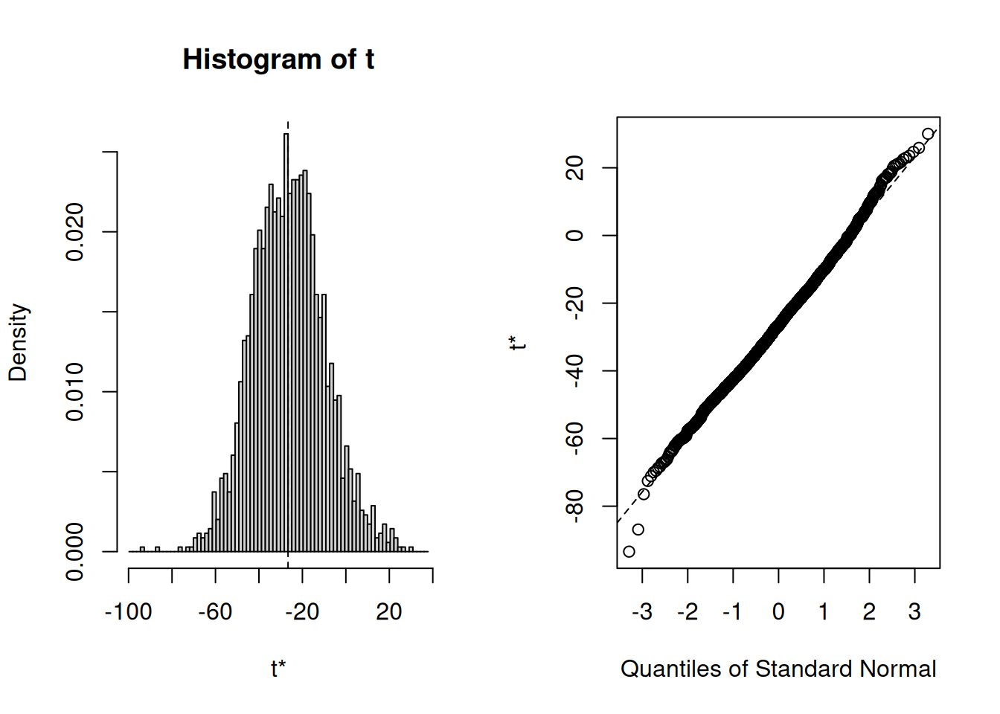
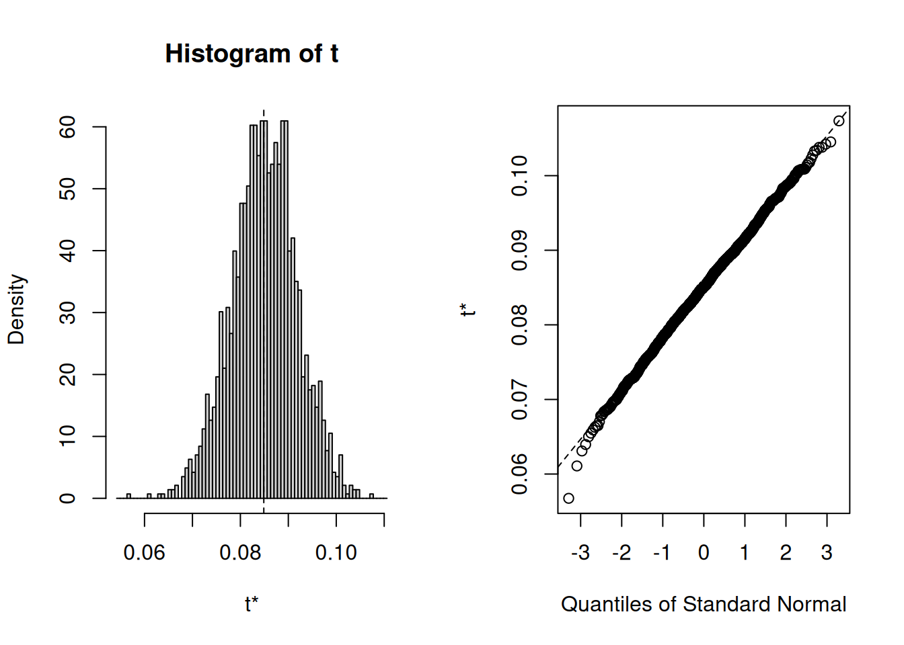
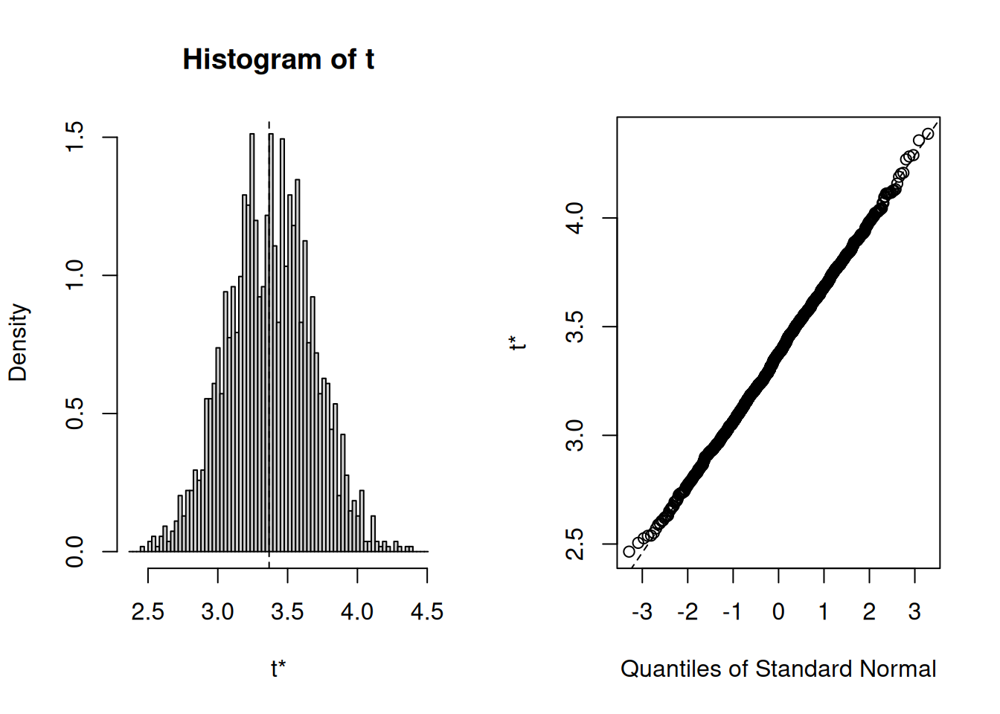
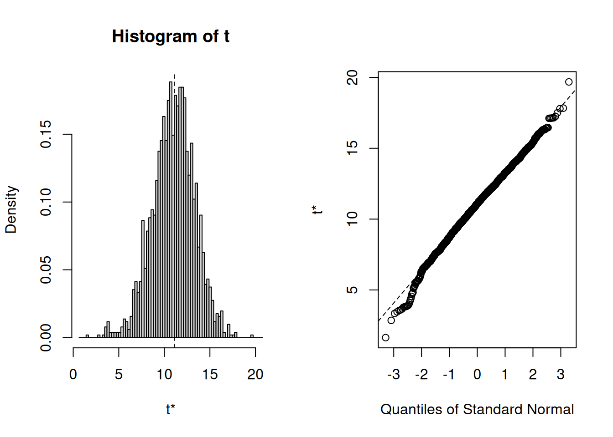
To summarize, you can inspect if the assumption of normally distributed errors is violated by visually examining the QQ-plot and using the Shapiro-Wilk test. If the results suggest a non-normal distribution of the errors, you should first try to transform your data (e.g., by using a log-transformation). If this doesn’t solve the issue, you should apply the bootstrapping procedure as shown above to obtain a robust test of the significance of the regression coefficients.
7.3.6 Correlation of errors
The assumption of independent errors implies that for any two observations the residual terms should be uncorrelated. This is also known as a lack of autocorrelation. In theory, this could be tested with the Durbin-Watson test, which checks whether adjacent residuals are correlated. However, be aware that the test is sensitive to the order of your data. Hence, it only makes sense if there is a natural order in the data (e.g., time-series data) when the presence of dependent errors indicates autocorrelation. Since there is no natural order in our data, we don’t need to apply this test.
If you are confronted with data that has a natural order, you can performed the test using the command durbinWatsonTest(), which takes the object that the lm() function generates as an argument. The test statistic varies between 0 and 4, with values close to 2 being desirable. As a rule of thumb values below 1 and above 3 are causes for concern.
7.3.7 Collinearity
Linear dependence of regressors, also known as multicollinearity, is when there is a strong linear relationship between the independent variables. Some correlation will always be present, but severe correlation can make proper estimation impossible. When present, it affects the model in several ways:
- Limits the size of R2: when two variables are highly correlated, the amount of unique explained variance is low; therefore the incremental change in R2 by including an additional predictor is larger if the predictor is uncorrelated with the other predictors.
- Increases the standard errors of the coefficients, making them less trustworthy.
- Uncertainty about the importance of predictors: if two predictors explain similar variance in the outcome, we cannot know which of these variables is important.
A quick way to find obvious multicollinearity is to examine the correlation matrix of the data. Any value > 0.8 - 0.9 should be cause for concern. You can, for example, create a correlation matrix using the rcorr() function from the Hmisc package.
## adspend airplay starpower
## adspend 1.00 0.10 0.08
## airplay 0.10 1.00 0.18
## starpower 0.08 0.18 1.00
##
## n= 200
##
##
## P
## adspend airplay starpower
## adspend 0.1511 0.2557
## airplay 0.1511 0.0099
## starpower 0.2557 0.0099The bivariate correlations can also be show in a plot:
Figure 7.3: Bivariate correlation plots
However, this only spots bivariate multicollinearity. Variance inflation factors can be used to spot more subtle multicollinearity arising from multivariate relationships. It is calculated by regressing Xi on all other X and using the resulting R2 to calculate
\[\begin{equation} \begin{split} \frac{1}{1 - R_i^2} \end{split} \tag{7.19} \end{equation}\]
VIF values of over 4 are certainly cause for concern and values over 2 should be further investigated. If the average VIF is over 1 the regression may be biased. The VIF for all variables can easily be calculated in R with the vif() function contained in the car package.
## adspend airplay starpower
## 1 1 1As you can see the values are well below the cutoff, indicating that we do not have to worry about multicollinearity in our example. If multicollinearity turns out to be an issue in your analysis, there are at least two ways to proceed. First, you could eliminate one of the predictors, e.g., by using variable selection procedures which will be covered below. Second, you could combine predictors that are highly correlated using statistical methods aiming at reducing the dimensionality of the data based on the correlation matrix, such as the Pricipal Component Analysis (PCA), which will be covered in the next chapter.
To summarize, you can inspect if the assumption of multicollinearity is violated by inspecting the variance inflation factor associated with the regression coefficients. Values over 4 are a cause for concern. In case multicollinearity turns out to be an issue, you can address it by 1) eliminating one of the regressors (e.g., using variable selection procedures) or combining variables that are highly correlated in one factor (e.g., using Principal Component Analysis).
7.3.8 Omitted Variables
If the goal of your analysis is to explain the effect of one variable on an outcome (rather than just predicting an outcome), one main concern that you need to be aware of is related to omitted variables. This issue relates back to the choice of research design. If you are interested in causal inference and you did not obtain your data from a randomized trial, the issue of omitted variables bias is of great importance. If your goal is to make predictions, you don’t need to worry about this too much - in this case other potential problems such as overfitting (see below) should receive more attention.
What do we mean by “omitted variables”? If a variable that influences the outcome is left out of the model (i.e., it is “omitted”), a bias in other variables’ coefficients might be introduced. Specifically, the other coefficients will be biased if the omitted variable influences the outcome and the independent variable(s) in your model. Intuitively, the variables left in the model “pick up” the effect of the omitted variable to the degree that they are related. Let’s illustrate this with an example.
Consider the following data set containing information on the number of streams that a sample of artists receive on a streaming service in one month.
The data set contains three variables:
- popularity: The average popularity rating of an artist measured on a scale from 0-10
- playlists: The number of playlists the artist is listen on
- streams: The number of streams an artist generates during the observation month (in thousands)
Say, as a marketing manager we are interested in estimating the effect of the number of playlists on the number of streams. If we estimate a model to explain the number of streams as a function of only the number of playlists, the results would look as follows:
##
## Call:
## lm(formula = streams ~ playlists, data = streaming_data)
##
## Residuals:
## Min 1Q Median 3Q Max
## -394.7 -87.9 -5.6 92.9 334.5
##
## Coefficients:
## Estimate Std. Error t value Pr(>|t|)
## (Intercept) 1248.065 15.814 78.9 <0.0000000000000002 ***
## playlists 3.032 0.198 15.3 <0.0000000000000002 ***
## ---
## Signif. codes: 0 '***' 0.001 '**' 0.01 '*' 0.05 '.' 0.1 ' ' 1
##
## Residual standard error: 135 on 170 degrees of freedom
## Multiple R-squared: 0.581, Adjusted R-squared: 0.578
## F-statistic: 235 on 1 and 170 DF, p-value: <0.0000000000000002As you can see, the results suggest that being listed on one more playlist leads to 3,032 more streams on average (recall that the dependent variable is given in thousands in this case, so we need multiply the coefficient by 1,000 to obtain the effect). Now let’s see what happens when we add the popularity of an artist as an additional predictor:
stream_model_2 <- lm(streams ~ playlists + popularity,
data = streaming_data)
summary(stream_model_2)##
## Call:
## lm(formula = streams ~ playlists + popularity, data = streaming_data)
##
## Residuals:
## Min 1Q Median 3Q Max
## -278.94 -62.28 7.23 72.35 246.51
##
## Coefficients:
## Estimate Std. Error t value Pr(>|t|)
## (Intercept) 1120.721 17.124 65.5 <0.0000000000000002 ***
## playlists 1.923 0.185 10.4 <0.0000000000000002 ***
## popularity 37.782 3.545 10.7 <0.0000000000000002 ***
## ---
## Signif. codes: 0 '***' 0.001 '**' 0.01 '*' 0.05 '.' 0.1 ' ' 1
##
## Residual standard error: 105 on 169 degrees of freedom
## Multiple R-squared: 0.749, Adjusted R-squared: 0.746
## F-statistic: 252 on 2 and 169 DF, p-value: <0.0000000000000002What happens to the coefficient of playlists? As you can see, the magnitude of the coefficient decreased substantially. Because the popularity of an artist influences both the number of playlists (more popular artists are listed on a larger number of playlists) and the number of streams (more popular artists receive more streams), the coefficient will be biased upwards. In this case, the popularity of an artists is said to be an unobserved confounder if it is not included in the model and the playlist variable is referred to as an endogenous predictor (i.e., the assumption of exogeneity is violated). As you could see, this unobserved confounder would lead us to overestimate the effect of playlists on the number of streams. It is therefore crucially important that you carefully consider what other factors could explain the dependent variable besides your main independent variable of interest. This is also the reason why it is much more difficult to estimate causal effects from observational data compared to randomized experiments, where you could, e.g., randomly assign artists to be included on playlists or not. But in real life, it is often not feasible to run field experiments, e.g., because we may not have control over which artists get included on a playlists and which artists don’t.
To summarize, if your goal is to identify a causal effect of one variable on another variable using observational (non-experimental) data, you need to carefully think about which potentially omitting variable may influence both the dependent and independent variable in your model. Unfortunately, there is no test that would tell you if you have indeed included all variables in your model so that you need to put forth arguments why you think that unobserved confounders are not a reason for concern in your analysis.
7.3.9 Overfitting
If the goal of your analysis is to predict an outcome, rather than explaining a causal effect of one variable on another variable, the issue of overfitting is a major concern. Overfitting basically means that your model is tuned so much to the specific data set that you have used to estimate the model that it won’t perform well when you would like to use the model to predict observations outside of your sample. So far, we have considered ‘in-sample’ statistics (e.g., R2) to judge the model fit. However, when the model building purpose is forecasting, we should test the predictive performance of the model on new data (i.e., ‘out-of-sample’ prediction). We can easily achieve this by splitting the sample in two parts:
- Training data set: used to estimate the model parameters
- Test data set (‘hold-out set’): predict values based training data
By inspecting how well the model based on the training data is able to predict the observations in the test data, we can judge the predictive ability of a model on new data. This is also referred to as the out-of-sample predictive accuracy. You can easily test the out-of-sample predictive accuracy of your model by splitting the data set in two parts - the training data and the test data. In the following code, we randomly 2/3 of the observations to estimate the model and retain the remaining 1/3 of observations to test how well we can predict the outcome based on our model.
# randomly split into training and test data:
set.seed(123)
n <- nrow(regression)
train <- sample(1:n, round(n * 2/3))
test <- (1:n)[-train]Now we have created two data sets - the training data set and the test data set. Next, let’s estimate the model using the training data and inspect the results
# estimate linear model based on training data
multiple_train <- lm(sales ~ adspend + airplay + starpower,
data = regression, subset = train)
summary(multiple_train) #summary of results##
## Call:
## lm(formula = sales ~ adspend + airplay + starpower, data = regression,
## subset = train)
##
## Residuals:
## Min 1Q Median 3Q Max
## -109.89 -30.21 -0.16 28.19 146.84
##
## Coefficients:
## Estimate Std. Error t value Pr(>|t|)
## (Intercept) -36.52425 20.15595 -1.81 0.0723 .
## adspend 0.09015 0.00868 10.38 <0.0000000000000002 ***
## airplay 3.49391 0.35649 9.80 <0.0000000000000002 ***
## starpower 11.22697 2.93189 3.83 0.0002 ***
## ---
## Signif. codes: 0 '***' 0.001 '**' 0.01 '*' 0.05 '.' 0.1 ' ' 1
##
## Residual standard error: 47 on 129 degrees of freedom
## Multiple R-squared: 0.7, Adjusted R-squared: 0.693
## F-statistic: 100 on 3 and 129 DF, p-value: <0.0000000000000002As you can see, the model results are similar to the results from the model from the beginning, which is not surprising since it is based on the same data with the only difference that we discarded 1/3 of the observations for validation purposes. In a next step, we can use the predict() function and the argument newdata to predict observations in the test data set based on our estimated model. To test the our-of-sample predictive accuracy of the model, we can then compute the squared correlation coefficient between the predicted and observed values, which will give us the out-of-sample model fit (i.e., the R2).
# using coefficients to predict test data
pred_lm <- predict(multiple_train, newdata = regression[test,
])
cor(regression[test, "sales"], pred_lm)^2 # R^2 for test data## [1] 0.57As you can see, the R2 is about 0.57, suggesting that 57% of the variation in the test data set can be explained by our model. Note that this share is somewhat lower compared to the within-sample fit that you can see in the model above (i.e., R2 = 0.7), which is not unexpected since the test data were not used to estimate the model. The value of 0.57 suggests that the model generalizes to other data sets quite well. We could also visualize the out-of-sample model fit as follows:
# plot predicted vs. observed values for test
# data
plot(regression[test, "sales"], pred_lm, xlab = "y measured",
ylab = "y predicted", cex.lab = 1.3)
abline(c(0, 1))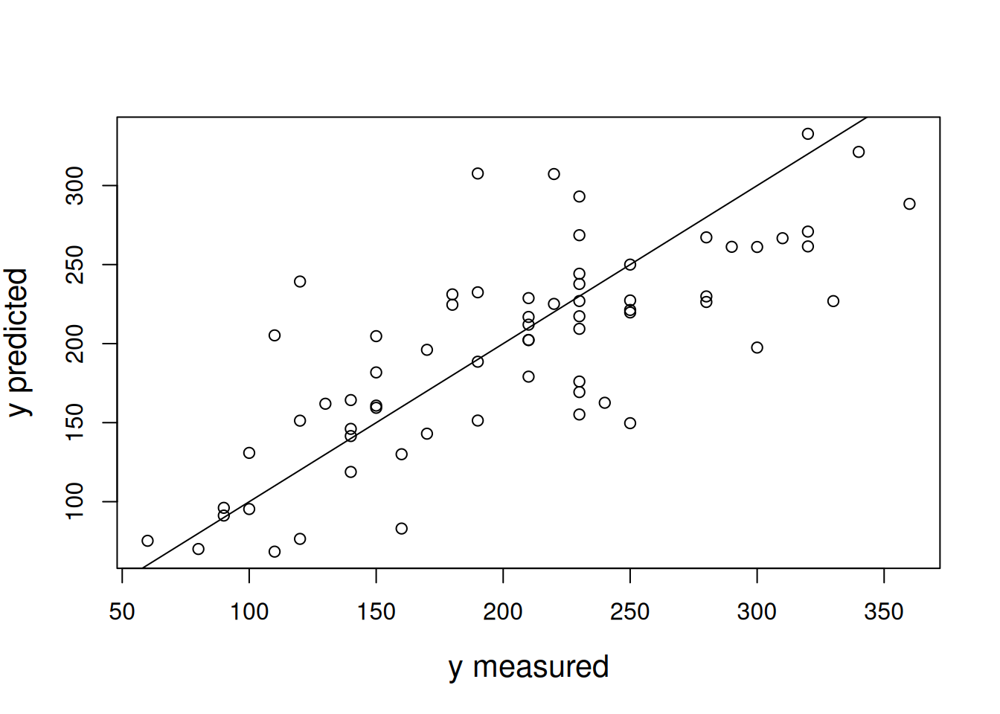
To summarize, overfitting is a concern in predictive models and it means that your model is so highly tuned to the data set you used to estimate the model that it does not generalize well to new data. To make sure that overfitting is not a reason for concern, you should test the out-of-sample predictive ability of your model using the process explained above.
7.3.10 Variable selection
A parsimonious model is a model that accomplishes a desired level of explanation or prediction with as few predictor variables as possible. Parsimonious models are desired because smaller models are easier to interpret and redundant or unnecessary variables should be left out (also to combat overfitting). Note that this is especially true for predictive models. If our goal was to explain a relationship between two variables and the variable we formulated a hypothesis for turns out to be insignificant, this result would also be interesting and, hence, you should also report the effect even though it may be insignificant.
Let’s use an example to see how we could identify variables that do not add any explanatory power to the model and should thus be excluded from the model. First, we will add a random variable to our existing regression data set. We can use the rnorm() function to generate random observations from a normal distribution.
The model selection process should tell us that we should favor a model without this predictor since it does not add any explanatory power. In the following code, we specify our model by gradually adding one predictor after the other and then we will use the anova() function to test the differences between the models.
# Model comparison with anova
lm0 <- lm(sales ~ 1, data = regression)
lm1 <- lm(sales ~ adspend, data = regression)
lm2 <- lm(sales ~ adspend + airplay, data = regression)
lm3 <- lm(sales ~ adspend + airplay + starpower, data = regression)
lm4 <- lm(sales ~ adspend + airplay + starpower + var_test,
data = regression)
anova(lm0, lm1, lm2, lm3, lm4)The output shows that the last model, in which we add the random variable as an additional predictor, does not significantly improve the model compared to the previous model (the results from the F-test is insignificant). Hence, we should use model “lm3” in this case.
Alternatively, we could also select the variables to be included in our model using a stepwise procedure with the step() function. To do this, we pass the most complete model from above, i.e., ‘lm4’ to the function and inspect the results:
options(digits = 8)
# Stepwise variable selection Automatic model
# selection with step
model_lmstep <- step(lm4)## Start: AIC=1545.41
## sales ~ adspend + airplay + starpower + var_test
##
## Df Sum of Sq RSS AIC
## - var_test 1 2935 434575 1544.76
## <none> 431640 1545.41
## - starpower 1 41322 472962 1561.69
## - airplay 1 318263 749902 1653.88
## - adspend 1 335612 767252 1658.45
##
## Step: AIC=1544.76
## sales ~ adspend + airplay + starpower
##
## Df Sum of Sq RSS AIC
## <none> 434575 1544.76
## - starpower 1 45853 480428 1562.82
## - airplay 1 325860 760434 1654.67
## - adspend 1 333332 767907 1656.62##
## Call:
## lm(formula = sales ~ adspend + airplay + starpower, data = regression)
##
## Coefficients:
## (Intercept) adspend airplay starpower
## -26.612958 0.084885 3.367425 11.086335In this case, the model selection is based on the information criterion AIC, which is defined as \(AIC=-2*maxLL+2k\), where LL refers to the log-likelihood and \(k\) denotes the number of parameters in the model. Maximizing the log-likelihood-function corresponds to a minimization of the residual sum of squares RSS (i.e., OLS estimator). Information criteria based on the maximized log-likelihood (e.g., AIC) provide an estimate of model parsimony, i.e., resolve the trade-off between model fit and model complexity, to achieve the best predictive ability (similar to adjusted R2). They include a penalty for model complexity and penalize overly complex models (i.e., \(k\) in case of the AIC), where complexity refers to the number of parameters in the model. The model with lowest AIC value is the most parsimonious. The information criteria and LL statistics should not be interpreted in absolute terms, but rather in comparison to nested model specifications.
The output above indicates that removing the var_test variable would change the AIC from 1545.41 to 1544.76 (i.e., lead to a more parsimonious model). For all the other predictor variables, the results indicate that removing these variables would actually lead to a higher AIC statistic (i.e., leading to a less parsimonious model). Similar to the conclusion for the comparison above, this model would correctly suggest to drop the var_test variable and retain all the other variables in the model.
To summarize, to obtain a parsimonious model, you should test if any of the model variables could be left out without decreasing the fit of your model using the procedures explained above.
7.4 Categorical predictors
7.4.1 Two categories
Suppose, you wish to investigate the effect of the variable “country” on sales, which is a categorical variable that can only take two levels (i.e., 0 = local artist, 1 = international artist). Categorical variables with two levels are also called binary predictors. It is straightforward to include these variables in your model as “dummy” variables. Dummy variables are factor variables that can only take two values. For our “country” variable, we can create a new predictor variable that takes the form:
\[\begin{equation} x_4 = \begin{cases} 1 & \quad \text{if } i \text{th artist is international}\\ 0 & \quad \text{if } i \text{th artist is local} \end{cases} \tag{7.20} \end{equation}\]
This new variable is then added to our regression equation from before, so that the equation becomes
\[\begin{align} Sales =\beta_0 &+\beta_1*adspend\\ &+\beta_2*airplay\\ &+\beta_3*starpower\\ &+\beta_4*international+\epsilon \end{align}\]
where “international” represents the new dummy variable and \(\beta_4\) is the coefficient associated with this variable. Estimating the model is straightforward - you just need to include the variable as an additional predictor variable. Note that the variable needs to be specified as a factor variable before including it in your model. If you haven’t converted it to a factor variable before, you could also use the wrapper function as.factor() within the equation.
multiple_regression_bin <- lm(sales ~ adspend + airplay +
starpower + country, data = regression) #estimate linear model
summary(multiple_regression_bin) #summary of results##
## Call:
## lm(formula = sales ~ adspend + airplay + starpower + country,
## data = regression)
##
## Residuals:
## Min 1Q Median 3Q Max
## -109.1987 -24.2970 -1.8219 29.1854 156.3111
##
## Coefficients:
## Estimate Std. Error t value Pr(>|t|)
## (Intercept) -16.4006000 16.3953963 -1.0003 0.3184
## adspend 0.0814637 0.0065285 12.4781 < 0.00000000000000022 ***
## airplay 3.0376582 0.2680852 11.3309 < 0.00000000000000022 ***
## starpower 10.0809967 2.2954638 4.3917 0.0000184294 ***
## countryinternational 45.6727416 8.6911720 5.2551 0.0000003862 ***
## ---
## Signif. codes: 0 '***' 0.001 '**' 0.01 '*' 0.05 '.' 0.1 ' ' 1
##
## Residual standard error: 44.183 on 195 degrees of freedom
## Multiple R-squared: 0.70627, Adjusted R-squared: 0.70024
## F-statistic: 117.22 on 4 and 195 DF, p-value: < 0.000000000000000222You can see that we now have an additional coefficient in the regression output, which tells us the effect of the binary predictor. The dummy variable can generally be interpreted as the average difference in the dependent variable between the two groups (similar to a t-test), conditional on the other variables you have included in your model. In this case, the coefficient tells you the difference in sales between international and local artists, and whether this difference is significant. Specifically, it means that international artists on average sell 45.67 units more than local artists, and this difference is significant (i.e., p < 0.05).
7.4.2 More than two categories
Predictors with more than two categories, like our “genre”” variable, can also be included in your model. However, in this case one dummy variable cannot represent all possible values, since there are three genres (i.e., 1 = Rock, 2 = Pop, 3 = Electronic). Thus, we need to create additional dummy variables. For example, for our “genre” variable, we create two dummy variables as follows:
\[\begin{equation} x_5 = \begin{cases} 1 & \quad \text{if } i \text{th product is from Pop genre}\\ 0 & \quad \text{if } i \text{th product is from Rock genre} \end{cases} \tag{7.21} \end{equation}\]
\[\begin{equation} x_6 = \begin{cases} 1 & \quad \text{if } i \text{th product is from Electronic genre}\\ 0 & \quad \text{if } i \text{th product is from Rock genre} \end{cases} \tag{7.22} \end{equation}\]
We would then add these variables as additional predictors in the regression equation and obtain the following model
\[\begin{align} Sales =\beta_0 &+\beta_1*adspend\\ &+\beta_2*airplay\\ &+\beta_3*starpower\\ &+\beta_4*international\\ &+\beta_5*Pop\\ &+\beta_6*Electronic+\epsilon \end{align}\]
where “Pop” and “Rock” represent our new dummy variables, and \(\beta_5\) and \(\beta_6\) represent the associated regression coefficients.
The interpretation of the coefficients is as follows: \(\beta_5\) is the difference in average sales between the genres “Rock” and “Pop”, while \(\beta_6\) is the difference in average sales between the genres “Rock” and “Electro”. Note that the level for which no dummy variable is created is also referred to as the baseline. In our case, “Rock” would be the baseline genre. This means that there will always be one fewer dummy variable than the number of levels.
You don’t have to create the dummy variables manually as R will do this automatically when you add the variable to your equation:
multiple_regression <- lm(sales ~ adspend + airplay +
starpower + country + genre, data = regression) #estimate linear model
summary(multiple_regression) #summary of results##
## Call:
## lm(formula = sales ~ adspend + airplay + starpower + country +
## genre, data = regression)
##
## Residuals:
## Min 1Q Median 3Q Max
## -116.1848 -26.5420 0.0528 27.9780 154.5628
##
## Coefficients:
## Estimate Std. Error t value Pr(>|t|)
## (Intercept) -30.6790082 16.5998893 -1.8481 0.0661114 .
## adspend 0.0723302 0.0065726 11.0048 < 0.00000000000000022 ***
## airplay 2.7141773 0.2682446 10.1183 < 0.00000000000000022 ***
## starpower 10.4962794 2.1937951 4.7845 0.000003398 ***
## countryinternational 40.8798829 8.4086835 4.8616 0.000002407 ***
## genrepop 47.6963967 10.4871650 4.5481 0.000009550 ***
## genreelectronic 27.6203374 8.1722318 3.3798 0.0008778 ***
## ---
## Signif. codes: 0 '***' 0.001 '**' 0.01 '*' 0.05 '.' 0.1 ' ' 1
##
## Residual standard error: 42.181 on 193 degrees of freedom
## Multiple R-squared: 0.73502, Adjusted R-squared: 0.72678
## F-statistic: 89.226 on 6 and 193 DF, p-value: < 0.000000000000000222How can we interpret the coefficients? It is estimated based on our model that products from the “Pop” genre will on average sell 47.69 units more than products from the “Rock” genre, and that products from the “Electronic” genre will sell on average 27.62 units more than the products from the “Rock” genre. The p-value of both variables is smaller than 0.05, suggesting that there is statistical evidence for a real difference in sales between the genres.
The level of the baseline category is arbitrary. As you have seen, R simply selects the first level as the baseline. If you would like to use a different baseline category, you can use the relevel() function and set the reference category using the ref argument. The following would estimate the same model using the second category as the baseline:
multiple_regression <- lm(sales ~ adspend + airplay +
starpower + country + relevel(genre, ref = 2),
data = regression) #estimate linear model
summary(multiple_regression) #summary of results##
## Call:
## lm(formula = sales ~ adspend + airplay + starpower + country +
## relevel(genre, ref = 2), data = regression)
##
## Residuals:
## Min 1Q Median 3Q Max
## -116.1848 -26.5420 0.0528 27.9780 154.5628
##
## Coefficients:
## Estimate Std. Error t value
## (Intercept) 17.0173885 18.1970368 0.9352
## adspend 0.0723302 0.0065726 11.0048
## airplay 2.7141773 0.2682446 10.1183
## starpower 10.4962794 2.1937951 4.7845
## countryinternational 40.8798829 8.4086835 4.8616
## relevel(genre, ref = 2)rock -47.6963967 10.4871650 -4.5481
## relevel(genre, ref = 2)electronic -20.0760593 7.9874725 -2.5134
## Pr(>|t|)
## (Intercept) 0.35087
## adspend < 0.00000000000000022 ***
## airplay < 0.00000000000000022 ***
## starpower 0.000003398 ***
## countryinternational 0.000002407 ***
## relevel(genre, ref = 2)rock 0.000009550 ***
## relevel(genre, ref = 2)electronic 0.01277 *
## ---
## Signif. codes: 0 '***' 0.001 '**' 0.01 '*' 0.05 '.' 0.1 ' ' 1
##
## Residual standard error: 42.181 on 193 degrees of freedom
## Multiple R-squared: 0.73502, Adjusted R-squared: 0.72678
## F-statistic: 89.226 on 6 and 193 DF, p-value: < 0.000000000000000222Note that while your choice of the baseline category impacts the coefficients and the significance level, the prediction for each group will be the same regardless of this choice.
7.5 Extensions of the linear model
The standard linear regression model provides results that are easy to interpret and is useful to address many real-world problems. However, it makes rather restrictive assumptions that might be violated in many cases. Notably, it assumes that the relationships between the response and predictor variable is additive and linear. The additive assumption states that the effect of an independent variable on the dependent variable is independent of the values of the other independent variables included in the model. The linear assumption means that the effect of a one-unit change in the independent variable on the dependent variable is the same, regardless of the values of the value of the independent variable. This is also referred to as constant marginal returns. For example, an increase in ad-spend from 10€ to 11€ yields the same increase in sales as an increase from 100,000€ to 100,001€. This section presents alternative model specifications if the assumptions do not hold.
7.5.1 Interaction effects
Regarding the additive assumption, it might be argued that the effect of some variables are not fully independent of the values of other variables. In our example, one could argue that the effect of advertising depends on the type of artist. For example, for local artist advertising might be more effective. We can investigate if this is the case using a grouped scatterplot:
ggplot(regression, aes(adspend, sales, colour = as.factor(country))) +
geom_point() + geom_smooth(method = "lm", alpha = 0.1) +
labs(x = "Advertising expenditures (EUR)", y = "Number of sales",
colour = "country") + theme_bw()Figure 7.4: Effect of advertising by group
The scatterplot indeed suggests that there is a difference in advertising effectiveness between local and international artists. You can see this from the two different regression lines. We can incorporate this interaction effect by including an interaction term in the regression equation as follows:
\[\begin{align} Sales =\beta_0 &+\beta_1*adspend\\ &+\beta_2*airplay\\ &+\beta_3*starpower\\ &+\beta_4*international\\ &+\beta_5*(adspend*international)\\ &+\epsilon \end{align}\]
You can see that the effect of advertising now depends on the type of artist. Hence, the additive assumption is removed. Note that if you decide to include an interaction effect, you should always include the main effects of the variables that are included in the interaction (even if the associated p-values do not suggest significant effects). It is easy to include an interaction effect in you model by adding an additional variable that has the format ```var1:var2````. In our example, this could be achieved using the following specification:
multiple_regression <- lm(sales ~ adspend + airplay +
starpower + country + adspend:country, data = regression) #estimate linear model
summary(multiple_regression) #summary of results##
## Call:
## lm(formula = sales ~ adspend + airplay + starpower + country +
## adspend:country, data = regression)
##
## Residuals:
## Min 1Q Median 3Q Max
## -105.431 -26.259 -2.717 29.353 161.525
##
## Coefficients:
## Estimate Std. Error t value
## (Intercept) -14.1169481 16.2937062 -0.8664
## adspend 0.0884725 0.0072955 12.1270
## airplay 2.9574474 0.2685930 11.0109
## starpower 9.4373011 2.2969371 4.1086
## countryinternational 71.5753078 15.1287682 4.7311
## adspend:countryinternational -0.0347189 0.0166667 -2.0831
## Pr(>|t|)
## (Intercept) 0.38734
## adspend < 0.00000000000000022 ***
## airplay < 0.00000000000000022 ***
## starpower 0.000058669 ***
## countryinternational 0.000004293 ***
## adspend:countryinternational 0.03855 *
## ---
## Signif. codes: 0 '***' 0.001 '**' 0.01 '*' 0.05 '.' 0.1 ' ' 1
##
## Residual standard error: 43.809 on 194 degrees of freedom
## Multiple R-squared: 0.71269, Adjusted R-squared: 0.70529
## F-statistic: 96.247 on 5 and 194 DF, p-value: < 0.000000000000000222How can we interpret the coefficient? The adspend main effect tells you the effect of advertising for the reference group that has the factor level zero. In our example, it is the advertising effect for local artist. This means that for local artists, spending an additional 1,000 Euros on advertising will result in approximately 89 additional unit sales. The interaction effect tells you by how much the effect differs for the other group (i.e., international artists) and whether this difference is significant. In our example, it means that the effect for international artists can be computed as: 0.0885 - 0.0347 = 0.0538. This means that for international artists, spending an additional 1,000 Euros on advertising will result in approximately 54 additional unit sales. Since the interaction effect is significant (p < 0.05) we can conclude that advertising is less effective for international artists.
The above example showed the interaction between a categorical variable (i.e., “country”) and a continuous variable (i.e., “adspend”). However, interaction effects can be defined for different combinations of variable types. For example, you might just as well specify an interaction between two continuous variables. In our example, you might suspect that there are synergy effects between advertising expenditures and radio airplay. It could be that advertising is more effective when an artist receives a large number of radio plays. In this case, we would specify our model as:
\[\begin{align} Sales =\beta_0 &+\beta_1*adspend\\ &+\beta_2*airplay\\ &+\beta_3*starpower\\ &+\beta_4*(adspend*airplay)\\ &+\epsilon \end{align}\]
In this case, we can interpret \(\beta_4\) as the increase in the effectiveness of advertising for a one unit increase in radio airplay (or vice versa). This can be translated to R using:
multiple_regression <- lm(sales ~ adspend + airplay +
starpower + adspend:airplay, data = regression) #estimate linear model
summary(multiple_regression) #summary of results##
## Call:
## lm(formula = sales ~ adspend + airplay + starpower + adspend:airplay,
## data = regression)
##
## Residuals:
## Min 1Q Median 3Q Max
## -128.301 -28.587 -2.152 28.041 141.591
##
## Coefficients:
## Estimate Std. Error t value Pr(>|t|)
## (Intercept) -34.52047735 19.31153974 -1.7876 0.0754 .
## adspend 0.10438741 0.02200443 4.7439 0.000004043410591583 ***
## airplay 3.68042650 0.43539815 8.4530 0.000000000000006556 ***
## starpower 10.89024162 2.44767207 4.4492 0.000014470121505845 ***
## adspend:airplay -0.00064885 0.00069488 -0.9338 0.3516
## ---
## Signif. codes: 0 '***' 0.001 '**' 0.01 '*' 0.05 '.' 0.1 ' ' 1
##
## Residual standard error: 47.103 on 195 degrees of freedom
## Multiple R-squared: 0.66616, Adjusted R-squared: 0.65931
## F-statistic: 97.278 on 4 and 195 DF, p-value: < 0.000000000000000222However, since the p-value of the interaction is larger than 0.05, there is little statistical evidence for an interaction between the two variables.
7.5.2 Non-linear relationships
7.5.2.1 Multiplicative model
In our example above, it appeared that linear relationships could be reasonably assumed. In many practical applications, however, this might not be the case. Let’s review the implications of a linear specification again:
- Constant marginal returns (e.g., an increase in ad-spend from 10€ to 11€ yields the same increase in sales as an increase from 100,000€ to 100,001€)
- Elasticities increase with X (e.g., advertising becomes relatively more effective; i.e., a relatively smaller change in advertising expenditure will yield the same return)
In many marketing contexts, these might not be reasonable assumptions. Consider the case of advertising. It is unlikely that the return on advertising will not depend on the level of advertising expenditures. It is rather likely that saturation occurs at some level, meaning that the return from an additional Euro spend on advertising is decreasing with the level of advertising expenditures (i.e., decreasing marginal returns). In other words, at some point the advertising campaign has achieved a certain level of penetration and an additional Euro spend on advertising won’t yield the same return as in the beginning.
Let’s use an example data set, containing the advertising expenditures of a company and the sales (in thousand units).
non_linear_reg <- read.table("https://raw.githubusercontent.com/IMSMWU/Teaching/master/MRDA2017/non_linear.dat",
sep = "\t", header = TRUE) #read in data
head(non_linear_reg)Now we inspect if a linear specification is appropriate by looking at the scatterplot:
ggplot(data = non_linear_reg, aes(x = advertising,
y = sales)) + geom_point(shape = 1) + geom_smooth(method = "lm",
fill = "blue", alpha = 0.1) + theme_bw()Figure 7.5: Non-linear relationship
It appears that a linear model might not represent the data well. It rather appears that the effect of an additional Euro spend on advertising is decreasing with increasing levels of advertising expenditures. Thus, we have decreasing marginal returns. We could put this to a test and estimate a linear model:
##
## Call:
## lm(formula = sales ~ advertising, data = non_linear_reg)
##
## Residuals:
## Min 1Q Median 3Q Max
## -10.47733 -2.38863 -0.35584 2.18843 16.74527
##
## Coefficients:
## Estimate Std. Error t value Pr(>|t|)
## (Intercept) 9.957521554 0.225115083 44.233 < 0.00000000000000022 ***
## advertising 0.000502446 0.000015611 32.186 < 0.00000000000000022 ***
## ---
## Signif. codes: 0 '***' 0.001 '**' 0.01 '*' 0.05 '.' 0.1 ' ' 1
##
## Residual standard error: 3.5931 on 998 degrees of freedom
## Multiple R-squared: 0.50932, Adjusted R-squared: 0.50883
## F-statistic: 1035.9 on 1 and 998 DF, p-value: < 0.000000000000000222Advertising appears to be positively related to sales with an additional Euro that is spent on advertising resulting in 0.0005 additional sales. The R2 statistic suggests that approximately 51% of the total variation can be explained by the model
To test if the linear specification is appropriate, let’s inspect some of the plots that are generated by R. We start by inspecting the residuals plot.
Figure 7.6: Residuals vs. Fitted
The plot suggests that the assumption of homoscedasticity is violated (i.e., the spread of values on the y-axis is different for different levels of the fitted values). In addition, the red line deviates from the dashed grey line, suggesting that the relationship might not be linear. Finally, the Q-Q plot of the residuals suggests that the residuals are not normally distributed.
Figure 7.7: Q-Q plot
To sum up, a linear specification might not be the best model for this data set.
In this case, a multiplicative model might be a better representation of the data. The multiplicative model has the following formal representation:
\[\begin{equation} Y =\beta_0 *X_1^{\beta_1}*X_2^{\beta_2}*...*X_J^{\beta_J}*\epsilon \tag{7.23} \end{equation}\]
This functional form can be linearized by taking the logarithm of both sides of the equation:
\[\begin{equation} log(Y) =log(\beta_0) + \beta_1*log(X_1) + \beta_2*log(X_2) + ...+ \beta_J*log(X_J) + log(\epsilon) \tag{7.24} \end{equation}\]
This means that taking logarithms of both sides of the equation makes linear estimation possible. The above transformation follows from two logarithm rules that we apply here:
- the product rule states that \(log(xy)=log(x)+log(y)\); thus, when taking the logarithm of the right hand side of the multiplicative model, we can write \(log(X_1) + log(X_2)... log(X_J)\) instead of \(log(X_1*X_2*...X_J)\), and
- the power rule states that \(log(x^y) = ylog(x)\); thus, we can write \(\beta*log(X)\) instead of \(X^{\beta}\)
Let’s test how the scatterplot would look like if we use the logarithm of our variables using the log() function instead of the original values.
ggplot(data = non_linear_reg, aes(x = log(advertising),
y = log(sales))) + geom_point(shape = 1) + geom_smooth(method = "lm",
fill = "blue", alpha = 0.1) + theme_bw()Figure 7.8: Linearized effect
It appears that now, with the log-transformed variables, a linear specification is a much better representation of the data. Hence, we can log-transform our variables and estimate the following equation:
\[\begin{equation} log(sales) = log(\beta_0) + \beta_1*log(advertising) + log(\epsilon) \tag{7.25} \end{equation}\]
This can be easily implemented in R by transforming the variables using the log() function:
##
## Call:
## lm(formula = log(sales) ~ log(advertising), data = non_linear_reg)
##
## Residuals:
## Min 1Q Median 3Q Max
## -0.665943 -0.127226 0.002988 0.134372 0.639636
##
## Coefficients:
## Estimate Std. Error t value Pr(>|t|)
## (Intercept) -0.0149269 0.0597141 -0.250 0.8027
## log(advertising) 0.3007687 0.0065095 46.205 <0.0000000000000002 ***
## ---
## Signif. codes: 0 '***' 0.001 '**' 0.01 '*' 0.05 '.' 0.1 ' ' 1
##
## Residual standard error: 0.20181 on 998 degrees of freedom
## Multiple R-squared: 0.68144, Adjusted R-squared: 0.68113
## F-statistic: 2134.9 on 1 and 998 DF, p-value: < 0.000000000000000222Note that this specification implies decreasing marginal returns (i.e., the returns of advertising are decreasing with the level of advertising), which appear to be more consistent with the data. The specification is also consistent with proportional changes in advertising being associated with proportional changes in sales (i.e., advertising does not become more effective with increasing levels). This has important implications on the interpretation of the coefficients. In our example, you would interpret the coefficient as follows: A 1% increase in advertising leads to a 0.3% increase in sales. Hence, the interpretation is in proportional terms and no longer in units. This means that the coefficients in a log-log model can be directly interpreted as elasticities, which also makes communication easier. We can generally also inspect the R2 statistic to see that the model fit has increased compared to the linear specification (i.e., R2 has increased to 0.681 from 0.509). However, please note that the variables are now measured on a different scale, which means that the model fit in theory is not directly comparable. Also, we could use the residuals plot to confirm that the revised specification is more appropriate:
Figure 7.9: Residuals plot

Figure 7.10: Q-Q plot
Finally, we can plot the predicted values against the observed values to see that the results from the log-log model (red) provide a better prediction than the results from the linear model (blue).
non_linear_reg$pred_lin_reg <- predict(linear_reg)
non_linear_reg$pred_log_reg <- predict(log_reg)
ggplot(data = non_linear_reg) + geom_point(aes(x = advertising,
y = sales), shape = 1) + geom_line(data = non_linear_reg,
aes(x = advertising, y = pred_lin_reg), color = "blue",
size = 1.05) + geom_line(data = non_linear_reg,
aes(x = advertising, y = exp(pred_log_reg)), color = "red",
size = 1.05) + theme_bw()Figure 7.11: Comparison if model fit
7.5.2.2 Quadratic model
Another way of modeling non-linearities is including a squared term if there are decreasing or increasing effects. In fact, we can model non-constant slopes as long as the form is a linear combination of exponentials (i.e. squared, cubed, …) of the explanatory variables. Usually we do not expect many inflection points so squared or third power terms suffice. Note that the degree of the polynomial has to be equal to the number of inflection points.
When using squared terms we can model diminishing and eventually negative returns. Think about advertisement spending. If a brand is not well known, spending on ads will increase brand awareness and have a large effect on sales. In a regression model this translates to a steep slope for spending at the origin (i.e. for lower spending). However, as more and more people will already know the brand we expect that an additional Euro spent on advertisement will have less and less of an effect the more the company spends. We say that the returns are diminishing. Eventually, if they keep putting more and more ads out, people get annoyed and some will stop buying from the company. In that case the return might even get negative. To model such a situation we need a linear as well as a squared term in the regression.
lm(...) can take squared (or any power) terms as input by adding I(X^2) as explanatory variable. In the example below we see a clear quadratic relationship with an inflection point at around 70. If we try to model this using the level of the covariates without the quadratic term we do not get a very good fit.
set.seed(1234)
X <- as.integer(runif(1000, 0, 12000))
Y <- 80000 + 140 * X - 0.01 * (X^2) + rnorm(1000, 0,
35000)
modLinear <- lm(Y/100000 ~ X)
sales_quad <- data.frame(sales = Y/100000, advertising = X *
0.01, Prediction = fitted(modLinear))
ggplot(sales_quad) + geom_point(aes(x = advertising,
y = sales, color = "Data")) + geom_line(aes(x = advertising,
y = Prediction, color = "Prediction")) + theme_bw() +
ggtitle("Linear Predictor") + theme(legend.title = element_blank())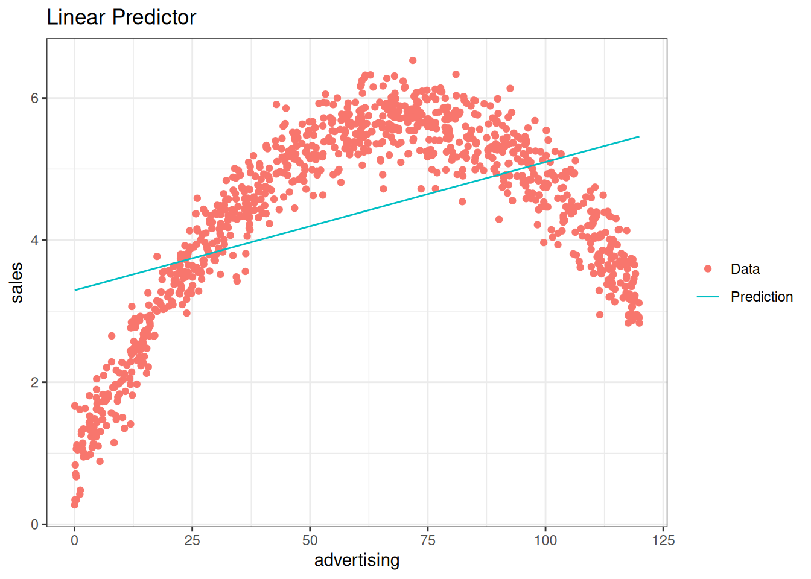
The graph above clearly shows that advertising spending of between 0 and 50 increases sales. However, the marginal increase (i.e. the slope of the data curve) is decreasing. Around 70 there is an inflection point. After that point additional ad-spending actually decreases sales (e.g. people get annoyed). Notice that the prediction line is straight, that is, the marginal increase of sales due to additional spending on advertising is the same for any amount of spending. This shows the danger of basing business decisions on wrongly specified models. But even in the area in which the sign of the prediction is correct, we are quite far off. Lets take a look at the top 5 sales values and the corresponding predictions:
top5 <- which(sales_quad$sales %in% head(sort(sales_quad$sales,
decreasing = TRUE), 5))
dplyr::arrange(sales_quad[top5, ], desc(sales_quad[top5,
1]))By including a quadratic term we can fit the data very well. This is still a linear model since the outcome variable is still explained by a linear combination of regressors even though one of the regressors is now just a non-linear function of the same variable (i.e. the squared value).
##
## Call:
## lm(formula = sales ~ advertising + I(advertising^2), data = sales_quad)
##
## Residuals:
## Min 1Q Median 3Q Max
## -1.021614 -0.220140 0.003639 0.223573 0.956181
##
## Coefficients:
## Estimate Std. Error t value Pr(>|t|)
## (Intercept) 0.8162719014 0.0317011155 25.749 < 0.00000000000000022 ***
## advertising 0.1396425755 0.0011994504 116.422 < 0.00000000000000022 ***
## I(advertising^2) -0.0009997164 0.0000095479 -104.706 < 0.00000000000000022 ***
## ---
## Signif. codes: 0 '***' 0.001 '**' 0.01 '*' 0.05 '.' 0.1 ' ' 1
##
## Residual standard error: 0.33218 on 997 degrees of freedom
## Multiple R-squared: 0.93596, Adjusted R-squared: 0.93583
## F-statistic: 7285.7 on 2 and 997 DF, p-value: < 0.000000000000000222## 2.5 % 97.5 %
## (Intercept) 0.7540633367 0.87848046615
## advertising 0.1372888385 0.14199631240
## I(advertising^2) -0.0010184526 -0.00098098016sales_quad$Prediction <- predict(quad_mod)
ggplot(data = sales_quad, aes(x = Prediction, y = sales)) +
geom_point(shape = 1) + geom_smooth(method = "lm",
fill = "blue", alpha = 0.1) + theme_bw()## `geom_smooth()` using formula 'y ~ x'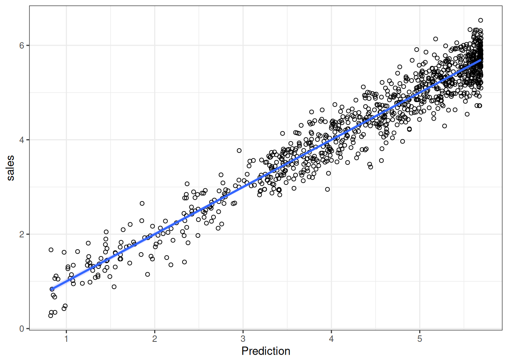
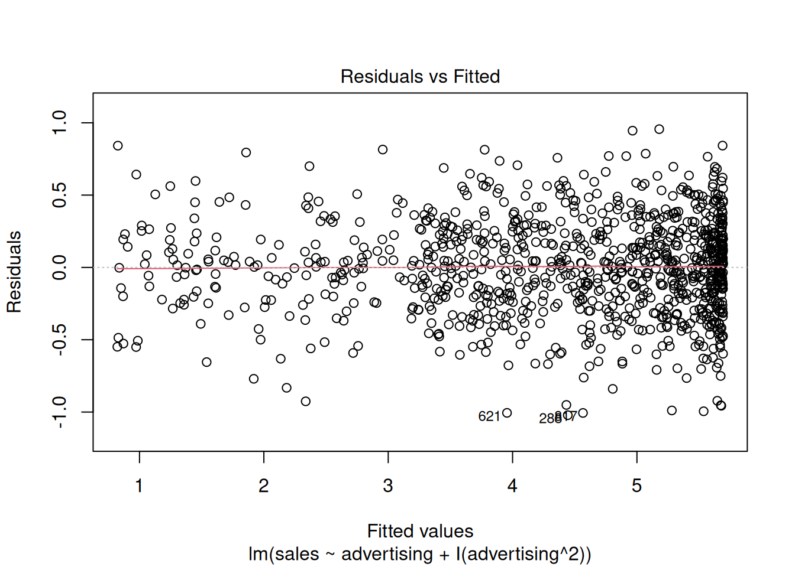
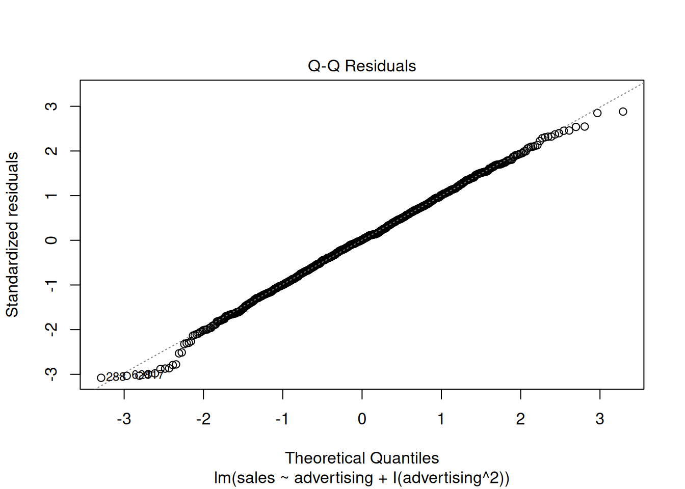
##
## Shapiro-Wilk normality test
##
## data: resid(quad_mod)
## W = 0.997653, p-value = 0.16559sales_quad$pred_lin_reg <- predict(modLinear)
ggplot(data = sales_quad) + geom_point(aes(x = advertising,
y = sales), shape = 1) + geom_line(data = sales_quad,
aes(x = advertising, y = pred_lin_reg), color = "blue",
size = 1.05) + geom_line(data = sales_quad, aes(x = advertising,
y = Prediction), color = "red", size = 1.05) +
theme_bw() + xlab("Advertising (thsd. Euro)") +
ylab("Sales (million units)")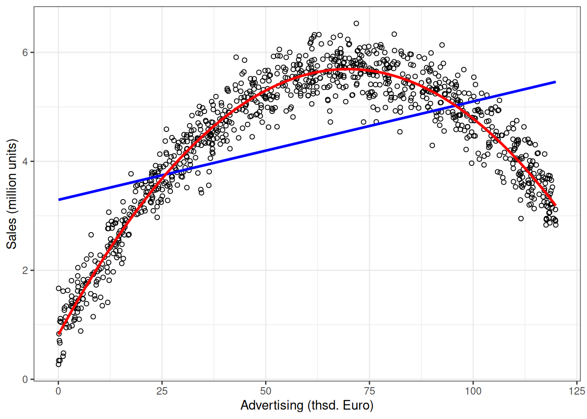
Now the prediction of the model is very close to the actual data and we could base our production decisions on that model.
top5 <- which(sales_quad$sales %in% head(sort(sales_quad$sales,
decreasing = TRUE), 5))
dplyr::arrange(sales_quad[top5, ], desc(sales_quad[top5,
1]))When interpreting the coefficients of the predictor in this model we have to be careful. Since we included the squared term, the slope is now different at each level of production (this can be seen in the graph above). That is, we do not have a single coefficient to interpret as the slope anymore. This can easily be shown by calculating the derivative of the model with respect to production.
\[ \text{Sales} = \alpha + \beta_1 \text{ Advertising} + \beta_2 \text{ Advertising}^2 + \varepsilon\\ {\delta \text{ Sales} \over \delta \text{ Advertising}} = \beta_1 + 2 \beta_2 \text{ Advertising} \equiv \text{Slope} \]
Intuitively, this means that the change of sales due to an additional Euro spent on advertising depends on the current level of advertising. \(\alpha\), the intercept can still be interpreted as the expected value of sales given that we do not advertise at all (set advertising to 0 in the model). The sign of the squared term (\(\beta_2\)) can be used to determine the curvature of the function. If the sign is positive, the function is convex (curvature is upwards), if it is negative it is concave curvature is downwards). We can interpret \(\beta_1\) and \(\beta_2\) separately in terms of their influence on the slope. By setting advertising to \(0\) we observe that \(\beta_1\) is the slope at the origin. By taking the derivative of the slope with respect to advertising we see that the change of the slope due to additional spending on advertising is two times \(\beta_2\).
\[ {\delta Slope \over \delta Advertising} = 2\beta_2 \]
At the maximum predicted value the slope is close to \(0\) (theoretically it is equal to \(0\) but this would require decimals and we can only sell whole pieces). Above we only calculated the prediction for the observed data, so let’s first predict the profit for all possible values between \(1\) and \(200\) to get the optimal production level according to our model.
predictionAll <- predict(quad_mod, newdata = data.frame(advertising = 1:200))
(optimalAdvertising <- as.integer(which.max(predictionAll)))## [1] 70# Slope at optimum:
coef(quad_mod)[["advertising"]] + 2 * coef(quad_mod)[["I(advertising^2)"]] *
optimalAdvertising## [1] -0.00031771725For all other levels of advertising we insert the pieces produced into the formula to obtain the slope at that point. In the following example you can choose the level of advertising.
7.6 Logistic regression
7.6.1 Motivation and intuition
In the last section we saw how to predict continuous outcomes (sales, height, etc.) via linear regression models. Another interesting case is that of binary outcomes, i.e. when the variable we want to model can only take two values (yes or no, group 1 or group 2, dead or alive, etc.). To this end we would like to estimate how our predictor variables change the probability of a value being 0 or 1. In this case we can technically still use a linear model (e.g. OLS). However, its predictions will most likely not be particularly useful. A more useful method is the logistic regression. In particular we are going to have a look at the logit model. In the following dataset we are trying to predict whether a song will be a top-10 hit on a popular music streaming platform. In a first step we are going to use only the danceability index as a predictor. Later we are going to add more independent variables.
library(ggplot2)
library(gridExtra)
chart_data <- read.delim2("https://raw.githubusercontent.com/IMSMWU/MRDA2018/master/data/chart_data_logistic.dat",header=T, sep = "\t",stringsAsFactors = F, dec = ".")
#Create a new dummy variable "top10", which is 1 if a song made it to the top10 and 0 else:
chart_data$top10 <- ifelse(chart_data$rank<11,1,0)
# Inspect data
head(chart_data)## 'data.frame': 422 obs. of 27 variables:
## $ artistName : chr "dj mustard" "bing crosby" "post malone" "chris brown" ...
## $ trackID : chr "01gNiOqg8u7vT90uVgOVmz" "01h424WG38dgY34vkI3Yd0" "02opp1cycqiFNDpLd2o1J3" "02yRHV9Cgk8CUS2fx9lKVC" ...
## $ trackName : chr "Whole Lotta Lovin'" "White Christmas" "Big Lie" "Anyway" ...
## $ rank : int 120 70 129 130 182 163 12 86 67 77 ...
## $ streams : int 917710 1865526 1480436 894216 642784 809256 3490456 1737890 1914768 1056689 ...
## $ frequency : int 3 9 1 1 1 2 2 12 17 11 ...
## $ danceability : num 0.438 0.225 0.325 0.469 0.286 0.447 0.337 0.595 0.472 0.32 ...
## $ energy : num 0.399 0.248 0.689 0.664 0.907 0.795 0.615 0.662 0.746 0.752 ...
## $ key : int 4 9 6 7 8 8 9 11 6 6 ...
## $ loudness : num -8.75 -15.87 -4.95 -7.16 -4.74 ...
## $ speechiness : num 0.0623 0.0337 0.243 0.121 0.113 0.0443 0.0937 0.0362 0.119 0.056 ...
## $ acousticness : num 0.154 0.912 0.197 0.0566 0.0144 0.211 0.0426 0.0178 0.072 0.289 ...
## $ instrumentalness: num 0.00000845 0.000143 0 0.00000158 0 0.00169 0.0000167 0 0 0.000101 ...
## $ liveness : num 0.0646 0.404 0.0722 0.482 0.268 0.0725 0.193 0.0804 0.116 0.102 ...
## $ valence : num 0.382 0.185 0.225 0.267 0.271 0.504 0.0729 0.415 0.442 0.398 ...
## $ tempo : num 160.2 96 77.9 124.7 75.6 ...
## $ duration_ms : int 299160 183613 207680 211413 266640 397093 199973 218447 196040 263893 ...
## $ time_signature : int 5 4 4 4 4 4 4 4 4 4 ...
## $ isrc : chr "QMJMT1500808" "USMC14750470" "USUM71614468" "USRC11502943" ...
## $ spotifyArtistID : chr "0YinUQ50QDB7ZxSCLyQ40k" "6ZjFtWeHP9XN7FeKSUe80S" "246dkjvS1zLTtiykXe5h60" "7bXgB6jMjp9ATFy66eO08Z" ...
## $ releaseDate : chr "08.01.2016" "27.08.2007" "09.12.2016" "11.12.2015" ...
## $ daysSinceRelease: int 450 1000 114 478 527 429 506 132 291 556 ...
## $ spotifyFollowers: int 139718 123135 629600 4077185 2221348 9687258 8713999 39723 4422933 3462797 ...
## $ mbid : chr "0612bcce-e351-40be-b3d7-2bb5e1c23479" "2437980f-513a-44fc-80f1-b90d9d7fcf8f" "b1e26560-60e5-4236-bbdb-9aa5a8d5ee19" "c234fa42-e6a6-443e-937e-2f4b073538a3" ...
## $ artistCountry : chr "US" "US" "0" "US" ...
## $ indicator : int 1 1 1 1 1 1 1 1 1 1 ...
## $ top10 : num 0 0 0 0 0 0 0 0 0 0 ...Below are two attempts to model the data. The left assumes a linear probability model (calculated with the same methods that we used in the last chapter), while the right model is a logistic regression model. As you can see, the linear probability model produces probabilities that are above 1 and below 0, which are not valid probabilities, while the logistic model stays between 0 and 1. Notice that songs with a higher danceability index (on the right of the x-axis) seem to cluster more at \(1\) and those with a lower more at \(0\) so we expect a positive influence of danceability on the probability of a song to become a top-10 hit.
Figure 1.3: The same binary data explained by two models; A linear probability model (on the left) and a logistic regression model (on the right)
A key insight at this point is that the connection between \(\mathbf{X}\) and \(Y\) is non-linear in the logistic regression model. As we can see in the plot, the probability of success is most strongly affected by danceability around values of \(0.5\), while higher and lower values have a smaller marginal effect. This obviously also has consequences for the interpretation of the coefficients later on.
7.6.2 Technical details of the model
As the name suggests, the logistic function is an important component of the logistic regression model. It has the following form:
\[ f(\mathbf{X}) = \frac{1}{1 + e^{-\mathbf{X}}} \] This function transforms all real numbers into the range between 0 and 1. We need this to model probabilities, as probabilities can only be between 0 and 1.
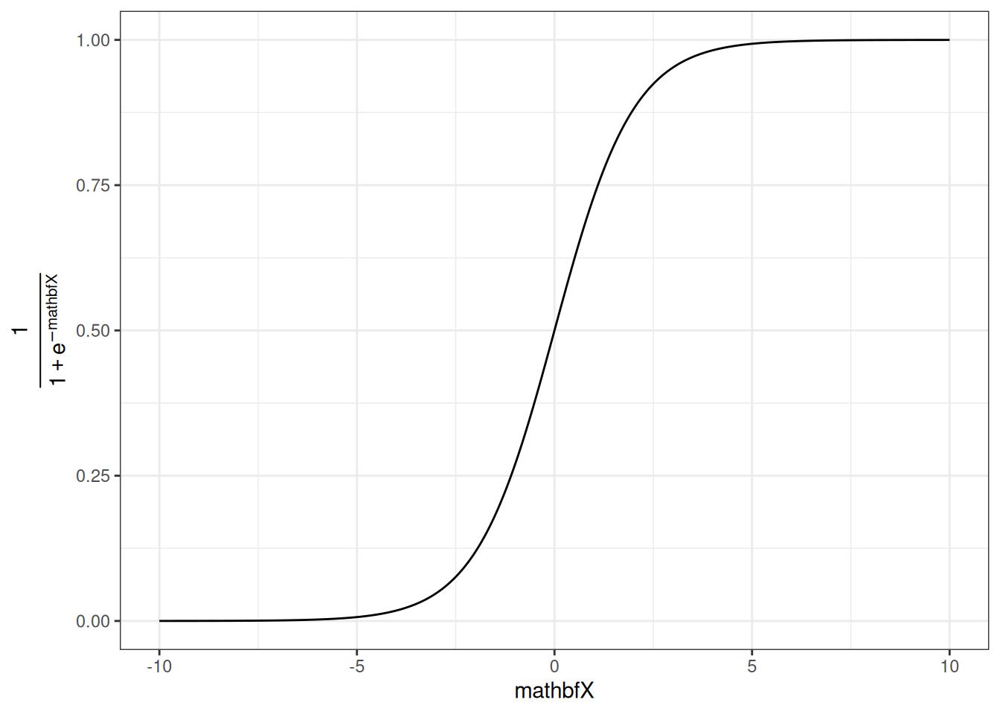
The logistic function on its own is not very useful yet, as we want to be able to determine how predictors influence the probability of a value to be equal to 1. To this end we replace the \(\mathbf{X}\) in the function above with our familiar linear specification, i.e.
\[ \mathbf{X} = \beta_0 + \beta_1 * x_{1,i} + \beta_2 * x_{2,i} + ... +\beta_m * x_{m,i}\\ f(\mathbf{X}) = P(y_i = 1) = \frac{1}{1 + e^{-(\beta_0 + \beta_1 * x_{1,i} + \beta_2 * x_{2,i} + ... +\beta_m * x_{m,i})}} \]
In our case we only have \(\beta_0\) and \(\beta_1\), the coefficient associated with danceability.
In general we now have a mathematical relationship between our predictor variables \((x_1, ..., x_m)\) and the probability of \(y_i\) being equal to one. The last step is to estimate the parameters of this model \((\beta_0, \beta_1, ..., \beta_m)\) to determine the magnitude of the effects.
7.6.3 Estimation in R
We are now going to show how to perform logistic regression in R. Instead of lm() we now use glm(Y~X, family=binomial(link = 'logit')) to use the logit model. We can still use the summary() command to inspect the output of the model.
#Run the glm
logit_model <- glm(top10 ~ danceability,family=binomial(link='logit'),data=chart_data)
#Inspect model summary
summary(logit_model )##
## Call:
## glm(formula = top10 ~ danceability, family = binomial(link = "logit"),
## data = chart_data)
##
## Coefficients:
## Estimate Std. Error z value Pr(>|z|)
## (Intercept) -10.0414 0.8963 -11.20 <0.0000000000000002 ***
## danceability 17.0939 1.6016 10.67 <0.0000000000000002 ***
## ---
## Signif. codes: 0 '***' 0.001 '**' 0.01 '*' 0.05 '.' 0.1 ' ' 1
##
## (Dispersion parameter for binomial family taken to be 1)
##
## Null deviance: 539.05 on 421 degrees of freedom
## Residual deviance: 258.49 on 420 degrees of freedom
## AIC: 262.49
##
## Number of Fisher Scoring iterations: 6Noticeably this output does not include an \(R^2\) value to asses model fit. Multiple “Pseudo \(R^2\)s”, similar to the one used in OLS, have been developed. There are packages that return the \(R^2\) given a logit model (see rcompanion or pscl). The calculation by hand is also fairly simple. We define the function logisticPseudoR2s() that takes a logit model as an input and returns three popular pseudo \(R^2\) values.
logisticPseudoR2s <- function(LogModel) {
dev <- LogModel$deviance
nullDev <- LogModel$null.deviance
modelN <- length(LogModel$fitted.values)
R.l <- 1 - dev / nullDev
R.cs <- 1- exp ( -(nullDev - dev) / modelN)
R.n <- R.cs / ( 1 - ( exp (-(nullDev / modelN))))
cat("Pseudo R^2 for logistic regression\n")
cat("Hosmer and Lemeshow R^2 ", round(R.l, 3), "\n")
cat("Cox and Snell R^2 ", round(R.cs, 3), "\n")
cat("Nagelkerke R^2 ", round(R.n, 3), "\n")
}
#Inspect Pseudo R2s
logisticPseudoR2s(logit_model )## Pseudo R^2 for logistic regression
## Hosmer and Lemeshow R^2 0.52
## Cox and Snell R^2 0.486
## Nagelkerke R^2 0.673The coefficients of the model give the change in the log odds of the dependent variable due to a unit change in the regressor. This makes the exact interpretation of the coefficients difficult, but we can still interpret the signs and the p-values which will tell us if a variable has a significant positive or negative impact on the probability of the dependent variable being \(1\). In order to get the odds ratios we can simply take the exponent of the coefficients.
## (Intercept) danceability
## 0.00004355897 26532731.71142458543Notice that the coefficient is extremely large. That is (partly) due to the fact that the danceability variable is constrained to values between \(0\) and \(1\) and the coefficients are for a unit change. We can make the “unit-change” interpretation more meaningful by multiplying the danceability index by \(100\). This linear transformation does not affect the model fit or the p-values.
#Re-scale independet variable
chart_data$danceability_100 <- chart_data$danceability*100
#Run the regression model
logit_model <- glm(top10 ~ danceability_100,family=binomial(link='logit'),data=chart_data)
#Inspect model summary
summary(logit_model )##
## Call:
## glm(formula = top10 ~ danceability_100, family = binomial(link = "logit"),
## data = chart_data)
##
## Coefficients:
## Estimate Std. Error z value Pr(>|z|)
## (Intercept) -10.04139 0.89629 -11.20 <0.0000000000000002 ***
## danceability_100 0.17094 0.01602 10.67 <0.0000000000000002 ***
## ---
## Signif. codes: 0 '***' 0.001 '**' 0.01 '*' 0.05 '.' 0.1 ' ' 1
##
## (Dispersion parameter for binomial family taken to be 1)
##
## Null deviance: 539.05 on 421 degrees of freedom
## Residual deviance: 258.49 on 420 degrees of freedom
## AIC: 262.49
##
## Number of Fisher Scoring iterations: 6## Pseudo R^2 for logistic regression
## Hosmer and Lemeshow R^2 0.52
## Cox and Snell R^2 0.486
## Nagelkerke R^2 0.673## (Intercept) danceability_100
## 0.00004355897 1.18641825295We observe that danceability positively affects the likelihood of becoming at top-10 hit. To get the confidence intervals for the coefficients we can use the same function as with OLS
## 2.5 % 97.5 %
## (Intercept) -11.9208213 -8.3954496
## danceability_100 0.1415602 0.2045529In order to get a rough idea about the magnitude of the effects we can calculate the partial effects at the mean of the data (that is the effect for the average observation). Alternatively, we can calculate the mean of the effects (that is the average of the individual effects). Both can be done with the logitmfx(...) function from the mfx package. If we set logitmfx(logit_model, data = my_data, atmean = FALSE) we calculate the latter. Setting atmean = TRUE will calculate the former. However, in general we are most interested in the sign and significance of the coefficient.
## Call:
## logitmfx(formula = logit_model, data = chart_data, atmean = FALSE)
##
## Marginal Effects:
## dF/dx Std. Err. z P>|z|
## danceability_100 0.0157310 0.0029761 5.2857 0.0000001252 ***
## ---
## Signif. codes: 0 '***' 0.001 '**' 0.01 '*' 0.05 '.' 0.1 ' ' 1This now gives the average partial effects in percentage points. An additional point on the danceability scale (from \(1\) to \(100\)), on average, makes it \(1.57\%\) (percentage points) more likely for a song to become at top-10 hit.
To get the effect of an additional point at a specific value, we can calculate the odds ratio by predicting the probability at a value and at the value \(+1\). For example if we are interested in how much more likely a song with 51 compared to 50 danceability is to become a hit we can simply calculate the following
#Probability of a top 10 hit with a danceability of 50
prob_50 <- exp(-(-summary(logit_model)$coefficients[1,1]-summary(logit_model)$coefficients[2,1]*50 ))
prob_50## [1] 0.224372#Probability of a top 10 hit with a danceability of 51
prob_51 <- exp(-(-summary(logit_model)$coefficients[1,1]-summary(logit_model)$coefficients[2,1]*51 ))
prob_51## [1] 0.266199## [1] 1.186418So the odds are 20% higher at 51 than at 50.
7.6.3.1 Logistic model with multiple predictors
Of course we can also use multiple predictors in logistic regression as shown in the formula above. We might want to add spotify followers (in million) and weeks since the release of the song.
chart_data$spotify_followers_m <- chart_data$spotifyFollowers/1000000
chart_data$weeks_since_release <- chart_data$daysSinceRelease/7Again, the familiar formula interface can be used with the glm() function. All the model summaries shown above still work with multiple predictors.
multiple_logit_model <- glm(top10 ~ danceability_100 + spotify_followers_m + weeks_since_release,family=binomial(link='logit'),data=chart_data)
summary(multiple_logit_model)##
## Call:
## glm(formula = top10 ~ danceability_100 + spotify_followers_m +
## weeks_since_release, family = binomial(link = "logit"), data = chart_data)
##
## Coefficients:
## Estimate Std. Error z value Pr(>|z|)
## (Intercept) -9.603762 0.990481 -9.696 < 0.0000000000000002 ***
## danceability_100 0.166236 0.016358 10.162 < 0.0000000000000002 ***
## spotify_followers_m 0.197717 0.060030 3.294 0.000989 ***
## weeks_since_release -0.012976 0.004956 -2.619 0.008832 **
## ---
## Signif. codes: 0 '***' 0.001 '**' 0.01 '*' 0.05 '.' 0.1 ' ' 1
##
## (Dispersion parameter for binomial family taken to be 1)
##
## Null deviance: 534.91 on 416 degrees of freedom
## Residual deviance: 239.15 on 413 degrees of freedom
## (5 observations deleted due to missingness)
## AIC: 247.15
##
## Number of Fisher Scoring iterations: 6## Pseudo R^2 for logistic regression
## Hosmer and Lemeshow R^2 0.553
## Cox and Snell R^2 0.508
## Nagelkerke R^2 0.703## (Intercept) danceability_100 spotify_followers_m weeks_since_release
## 0.0000674744 1.1808513243 1.2186174345 0.9871076460## 2.5 % 97.5 %
## (Intercept) -11.67983072 -7.782122558
## danceability_100 0.13625795 0.200625438
## spotify_followers_m 0.08079476 0.317115293
## weeks_since_release -0.02307859 -0.0035664627.6.3.2 Model selection
The question remains, whether a variable should be added to the model. We will present two methods for model selection for logistic regression. The first is based on the Akaike Information Criterium (AIC). It is reported with the summary output for logit models. The value of the AIC is relative, meaning that it has no interpretation by itself. However, it can be used to compare and select models. The model with the lowest AIC value is the one that should be chosen. Note that the AIC does not indicate how well the model fits the data, but is merely used to compare models.
For example, consider the following model, where we exclude the followers covariate. Seeing as it was able to contribute significantly to the explanatory power of the model, the AIC increases, indicating that the model including followers is better suited to explain the data. We always want the lowest possible AIC.
multiple_logit_model2 <- glm(top10 ~ danceability_100 + weeks_since_release,family=binomial(link='logit'),data=chart_data)
summary(multiple_logit_model2)##
## Call:
## glm(formula = top10 ~ danceability_100 + weeks_since_release,
## family = binomial(link = "logit"), data = chart_data)
##
## Coefficients:
## Estimate Std. Error z value Pr(>|z|)
## (Intercept) -8.980225 0.930654 -9.649 <0.0000000000000002 ***
## danceability_100 0.166498 0.016107 10.337 <0.0000000000000002 ***
## weeks_since_release -0.012805 0.004836 -2.648 0.0081 **
## ---
## Signif. codes: 0 '***' 0.001 '**' 0.01 '*' 0.05 '.' 0.1 ' ' 1
##
## (Dispersion parameter for binomial family taken to be 1)
##
## Null deviance: 534.91 on 416 degrees of freedom
## Residual deviance: 250.12 on 414 degrees of freedom
## (5 observations deleted due to missingness)
## AIC: 256.12
##
## Number of Fisher Scoring iterations: 6As a second measure for variable selection, you can use the pseudo \(R^2\)s as shown above. The fit is distinctly worse according to all three values presented here, when excluding the Spotify followers.
## Pseudo R^2 for logistic regression
## Hosmer and Lemeshow R^2 0.532
## Cox and Snell R^2 0.495
## Nagelkerke R^2 0.6857.6.3.3 Predictions
We can predict the probability given an observation using the predict(my_logit, newdata = ..., type = "response") function. Replace ... with the observed values for which you would like to predict the outcome variable.
# Prediction for one observation
predict(multiple_logit_model, newdata = data.frame(danceability_100=50, spotify_followers_m=10, weeks_since_release=1), type = "response")## 1
## 0.6619986The prediction indicates that a song with danceability of \(50\) from an artist with \(10M\) Spotify followers has a \(66%\) chance of being in the top-10, 1 week after its release.
7.6.3.4 Perfect Prediction Logit
Perfect prediction occurs whenever a linear function of \(X\) can perfectly separate the \(1\)s from the \(0\)s in the dependent variable. This is problematic when estimating a logit model as it will result in biased estimators (also check to p-values in the example!). R will return the following message if this occurs:
glm.fit: fitted probabilities numerically 0 or 1 occurred
Given this error, one should not use the output of the glm(...) function for the analysis. There are various ways to deal with this problem, one of which is to use Firth’s bias-reduced penalized-likelihood logistic regression with the logistf(Y~X) function in the logistf package.
7.6.3.4.1 Example
In this example data \(Y = 0\) if \(x_1 <0\) and \(Y=1\) if \(x_1>0\) and we thus have perfect prediction. As we can see the output of the regular logit model is not interpretable. The standard errors are huge compared to the coefficients and thus the p-values are \(1\) despite \(x_1\) being a predictor of \(Y\). Thus, we turn to the penalized-likelihood version. This model correctly indicates that \(x_1\) is in fact a predictor for \(Y\) as the coefficient is significant.
Y <- c(0,0,0,0,1,1,1,1)
X <- cbind(c(-1,-2,-3,-3,5,6,10,11),c(3,2,-1,-1,2,4,1,0))
# Perfect prediction with regular logit
summary(glm(Y~X, family=binomial(link="logit")))##
## Call:
## glm(formula = Y ~ X, family = binomial(link = "logit"))
##
## Coefficients:
## Estimate Std. Error z value Pr(>|z|)
## (Intercept) -6.943 113859.819 0 1
## X1 7.359 15925.250 0 1
## X2 -3.125 43853.490 0 1
##
## (Dispersion parameter for binomial family taken to be 1)
##
## Null deviance: 11.09035488895912 on 7 degrees of freedom
## Residual deviance: 0.00000000027772 on 5 degrees of freedom
## AIC: 6
##
## Number of Fisher Scoring iterations: 24## logistf(formula = Y ~ X)
##
## Model fitted by Penalized ML
## Coefficients:
## coef se(coef) lower 0.95 upper 0.95 Chisq p
## (Intercept) -0.98871643 1.2135184 -10.21693673 1.884508 0.59231445 0.44152553
## X1 0.33195133 0.1832767 0.04170297 1.463409 5.31583569 0.02113246
## X2 0.08250405 0.5109798 -2.17888664 3.379327 0.01980379 0.88808646
## method
## (Intercept) 2
## X1 2
## X2 2
##
## Method: 1-Wald, 2-Profile penalized log-likelihood, 3-None
##
## Likelihood ratio test=5.800986 on 2 df, p=0.05499609, n=8
## Wald test = 3.744738 on 2 df, p = 0.1537597.7 Causal Modeling & Mediation Analysis
This chapter deals with a fundamental question of causal inference: Which variables should be included in a causal model? (see Cinelli et al. 2020) To answer this question two points need to be clear:
- In general each causal model only investigates the causal effect of a single independent variable, \(x_k\), on the dependent variable \(y\). The coefficients associated with all other variables, \(x_{j\neq k}\), cannot (automatically) be interpreted as causal relationships. As regression coefficients are commonly presented in a single table, it is often unclear to the reader which coefficients can be interpreted as causal (see Westreich et al. 2013).
- Statistical significance (or any other statistical test) does not give us any idea about the causal model. To illustrate this, the following figure shows three statistically significant relationships between the variables \(x\) and \(y\) (all t-stats \(> 9\)). However, by construction there is no causal relationship between them in two of these examples. Even more concerning: In one case the exclusion of a control variable leads to spurious correlation (leftmost plot) while in the other the inclusion of the control variable does the same (rightmost plot).

In order to learn about causal modeling we need to introduce a few concepts. First, we will talk about Directed Acyclic Graphs (or DAGs). Then, we will introduce three types of scenarios, the fork, the pipe, and the collider, and relate those to the concepts of omitted variable bias and mediation. Finally, we will implement and interpret mediation analysis.
7.7.1 Directed Acyclic Graphs (DAGs)
A graph is a construct that consists of nodes, in our case variables, and edges connecting (some of) the nodes, in our case relationships between the variables. Directed graphs have the additional property that the connections go in a particular direction. In the context of causal modeling, the causal relationship can only go in one direction. For example the direction would be from an influencer marketing campaign to subsequent sales. In general, we will not allow for any “cycles” of causality (i.e., starting from \(X\) it must be impossible to end up at \(X\) again when going in the direction of the edges) and thus call the graphs acyclic. In addition, we need the concept of d-connection. Variable \(x\) is said to be d-connected to variable \(y\) if it is possible to go from \(x\) to \(y\) in the direction of the edges (this might be a direct connection or there might be additional variables, i.e., mediators, inbetween; more on that later).
Let’s start with the simple scenario in which an influencer marketing campaign has a positive influence on sales (assuming no other variables are relevant). The DAG would look as follows showing the d-connection between influencer marketing and sales:

In this case a simple linear regression could be used to identify the marginal effect of spending an additional Euro on influencer marketing on sales. Looking at the following plot a log-log relationship seems appropriate.

##
## Call:
## lm(formula = log(sales) ~ log(influencer_marketing))
##
## Residuals:
## Min 1Q Median 3Q Max
## -0.295432 -0.061417 0.001956 0.063951 0.260460
##
## Coefficients:
## Estimate Std. Error t value Pr(>|t|)
## (Intercept) 2.483627 0.009835 252.52 <2e-16 ***
## log(influencer_marketing) 0.198591 0.006115 32.48 <2e-16 ***
## ---
## Signif. codes: 0 '***' 0.001 '**' 0.01 '*' 0.05 '.' 0.1 ' ' 1
##
## Residual standard error: 0.09552 on 298 degrees of freedom
## Multiple R-squared: 0.7797, Adjusted R-squared: 0.779
## F-statistic: 1055 on 1 and 298 DF, p-value: < 2.2e-16Note that while the causal relationship only goes in one direction, the correlation is “symmetric” in the sense that we could als switch sales and influencer_marketing in the model and would still get “significant” results.
##
## Call:
## lm(formula = log(influencer_marketing) ~ log(sales))
##
## Residuals:
## Min 1Q Median 3Q Max
## -1.3559 -0.3091 0.0122 0.2965 1.3120
##
## Coefficients:
## Estimate Std. Error t value Pr(>|t|)
## (Intercept) -9.4579 0.3331 -28.39 <2e-16 ***
## log(sales) 3.9262 0.1209 32.48 <2e-16 ***
## ---
## Signif. codes: 0 '***' 0.001 '**' 0.01 '*' 0.05 '.' 0.1 ' ' 1
##
## Residual standard error: 0.4247 on 298 degrees of freedom
## Multiple R-squared: 0.7797, Adjusted R-squared: 0.779
## F-statistic: 1055 on 1 and 298 DF, p-value: < 2.2e-167.7.2 The Fork (Good control)

A typical dataset with a confounder will exhibit correlation between the treatment \(X\) and outcome \(y.\) This relationship is not causal! In the example below we have a binary confounder \(d\) (Yes/No) that is d-connected with both \(X\) and \(y\) (\(X\) and \(y\) are not d-connected)

| term | estimate | std.error | statistic | p.value |
|---|---|---|---|---|
| (Intercept) | 1.0086 | 0.0671 | 15.0351 | 0.0000 |
| x | 0.4672 | 0.0464 | 10.0576 | 0.0000 |
However once we take the confounder into account the association vanishes which reflects the lack of a causal relationship in this case (note that for simplicity the regression lines in the plot are not the same as the model output shown).

| term | estimate | std.error | statistic | p.value |
|---|---|---|---|---|
| (Intercept) | 0.4426 | 0.0633 | 6.9879 | 0.0000 |
| x | 0.0526 | 0.0617 | 0.8519 | 0.3947 |
| dNo | 1.9350 | 0.1364 | 14.1815 | 0.0000 |
| x:dNo | −0.0616 | 0.0914 | −0.6741 | 0.5006 |
Examples and ways to deal with confounders are shown below.
7.7.3 The Pipe (Bad control)

If we have a mediator in our data the picture looks very similar to the previous one. In addition, taking the mediator into account also has a similar effect: we remove the association between \(X\) and \(y\). However, in this case that is not what we want since \(X\) and \(y\) are d-connected. \(X\) causes \(y\) through \(z\) (note that for simplicity the regression lines in the second plot are not the same as the model output shown). Examples of such relationships and the corresponding models are discussed in Mediation analysis.

| term | estimate | std.error | statistic | p.value |
|---|---|---|---|---|
| (Intercept) | 0.9028 | 0.0586 | 15.4170 | 0.0000 |
| x | 0.5804 | 0.0593 | 9.7944 | 0.0000 |

| term | estimate | std.error | statistic | p.value |
|---|---|---|---|---|
| (Intercept) | −0.0393 | 0.0755 | −0.5205 | 0.6029 |
| x | −0.0185 | 0.0787 | −0.2349 | 0.8143 |
| z | 2.0562 | 0.1137 | 18.0855 | 0.0000 |
| x:z | −0.0324 | 0.1146 | −0.2826 | 0.7776 |
7.7.4 The Collider (Bad control)

The collider is a special case. There is no association between \(X\) and \(y\) as long as we do not account for the collider in the model. However, by accounting for the collider we implicitly learn about \(y\) as well (we use \(X\) as the predictor). Since the collider is caused by \(X\) and \(y\), we can figure out what \(y\) must be once we know \(X\) and the collider similar to solving a simple equation you would see in high-school.

| term | estimate | std.error | statistic | p.value |
|---|---|---|---|---|
| (Intercept) | 0.0203 | 0.0449 | 0.4519 | 0.6515 |
| x | 0.0307 | 0.0455 | 0.6754 | 0.4997 |

| term | estimate | std.error | statistic | p.value |
|---|---|---|---|---|
| (Intercept) | 0.8614 | 0.0538 | 16.0142 | 0.0000 |
| x | 0.5328 | 0.0422 | 12.6293 | 0.0000 |
| aYes | −1.6663 | 0.0834 | −19.9822 | 0.0000 |
To illustrate the concept of a collider let’s look at an example:
Does product quality have an effect on marketing effectiveness?
Imagine a scenario in which product quality and marketing effectiveness are actually unrelated but both contribute to product success.
We might estimate the following models. Model (1) is correctly specified, and model (2) includes the collider. Note that neither \(R^2\) nor the p-values would lead us to choose the correct model. Including the collider leads to a spurious negative correlation between product quality and marketing effectiveness. Based on this result a marketing manager could incorrectly conclude that only low-quality products should be advertised.
mod_correct <- lm(marketing_effectiveness ~ prod_qual, data_effectiveness)
mod_collider <- lm(marketing_effectiveness ~ prod_qual + success, data_effectiveness)
stargazer::stargazer(
mod_correct, mod_collider,
type = "html"
)| Dependent variable: | ||
| marketing_effectiveness | ||
| (1) | (2) | |
| prod_qual | 0.031 | -0.470*** |
| (0.045) | (0.042) | |
| successYes | 1.676*** | |
| (0.082) | ||
| Constant | 0.020 | -0.839*** |
| (0.045) | (0.054) | |
| Observations | 500 | 500 |
| R2 | 0.001 | 0.455 |
| Adjusted R2 | -0.001 | 0.453 |
| Residual Std. Error | 1.005 (df = 498) | 0.743 (df = 497) |
| F Statistic | 0.456 (df = 1; 498) | 207.705*** (df = 2; 497) |
| Note: | p<0.1; p<0.05; p<0.01 | |
7.7.5 Omitted Variable Bias (Confounders)
Recall that variables that influence both the outcome and other independent variables will bias the coefficients of those other independent variables if left out of a model. This bias is referred to as “Omitted Variable Bias” (short OVB) since it occurs due to the omission of a crucial variable. OVB occurs whenever a confounder (see The Fork) is left out of the model and constitutes a serious threat to causal interpretation of the coefficients. The good news is that OVB (typically) only occurs with observational data and can be mitigated by manipulating the focal variable \(x\) in an experiment. If done correctly, the variation in \(x\) is completely controlled by the marketing manager, e.g., through multiple conditions in a randomized experiment. Therefore, the (potentially unobserved) confounder is no longer responsible for the variation in \(x\). In other words, the path from the confounder to \(x\) is eliminated and OVB is no longer present. To illustrate this, imagine two scenarios in which we try to estimate the effectiveness of a nike shoe ad. In the first scenario we simply compare consumers that were shown the ad with those who were not shown the ad. However, we omit the fact that the ad was shown to users that searched for the term “nike running shoes” and not to others. This will bias the lower path (Ad -> Purchase) in the following DAG:

In a second scenario we randomly assign each consumer to be shown the ad (treated) or not (control). In this case the confounder is no longer responsible for the variation in \(x\), i.e., searching for the shoe did not cause the ad to be shown, since each person was randomly assigned to be shown the ad. The DAG becomes

Note that if we omit the variable indicating whether someone has searched for a shoe or not it is still part of the error term, i.e., we likely increase the error variance, but our causal effect of the ad on purchase is now unbiased (and consistent). If we do observe whether someone searched for the shoe or not we can still add it as a control variable, potentially decreasing the standard error of our estimate.
The bad news is that we are unable to run randomized experiments in many situations. Therefore, it is valuable to understand the magnitude of the OVB. The magnitude of the OVB depends on how strongly correlated the confounder is with the included variable \(x\). To illustrate this take a look at the equations representing the situation in The Fork:
\[ \begin{aligned} x &= \alpha_0 + \alpha_1 d + \varepsilon_x \\ y &= \beta_0 + \beta_1 d + \varepsilon_y \end{aligned} \]
However, we might be unaware of the confounder \(d\) but still be interested in the causal effect of \(x\) on \(y\). Therefore, we might be inclined to estimate the following (misspecified) model
\[ y = \gamma_0 + \gamma_1 x + \epsilon_y \]
We know (based on the equations above) that the true effect of \(x\) on \(y\) is \(0\) as it is entirely caused by \(d\). In order to investigate the magnitude of the OVB we mistakenly view \(d\) as a function of \(x\) (see Mediation analysis):
\[ d = \theta_0 + \theta_1 x + \varepsilon_d, \]
plug the incorrectly specified model for \(d\) into the correctly specified model for \(y\), and take the derivative with respect to \(x\):
\[ \begin{aligned} y &= \tilde \beta_0 + \beta_1 (\theta_0 + \theta_1 x + \varepsilon_d) + \epsilon_y \\ &= \tilde \beta_0 + \beta_1 \theta_0 + \beta_1 \theta_1 x + \beta_1 \varepsilon_d + \epsilon_y \\ {\delta \over \delta x} &= \beta_1 \theta_1 \end{aligned} \]
Note that \(\gamma_1 = \beta_1 \theta_1\).
library(stargazer)
set.seed(11)
d <- 100 * rnorm(n)
x <- -4 + 0.5 * d + 10 * rnorm(n)
y <- 25 + 10 * d + 10 * rnorm(n)
stargazer(
lm(y ~ d + x),
lm(y ~ x), ## gamma
lm(y ~ d), ## beta
lm(d ~ x), ## theta
type = 'html')| Dependent variable: | ||||
| y | d | |||
| (1) | (2) | (3) | (4) | |
| d | 9.996*** | 9.997*** | ||
| (0.023) | (0.005) | |||
| x | 0.003 | 19.096*** | 1.910*** | |
| (0.046) | (0.173) | (0.017) | ||
| Constant | 24.889*** | 97.282*** | 24.878*** | 7.242*** |
| (0.488) | (8.789) | (0.456) | (0.878) | |
| Observations | 500 | 500 | 500 | 500 |
| R2 | 1.000 | 0.961 | 1.000 | 0.961 |
| Adjusted R2 | 1.000 | 0.961 | 1.000 | 0.961 |
| Residual Std. Error | 10.204 (df = 497) | 195.949 (df = 498) | 10.193 (df = 498) | 19.576 (df = 498) |
| F Statistic | 2,343,560.000*** (df = 2; 497) | 12,212.740*** (df = 1; 498) | 4,696,511.000*** (df = 1; 498) | 12,242.150*** (df = 1; 498) |
| Note: | p<0.1; p<0.05; p<0.01 | |||
## See coef of regression y ~ x
beta1 <- coef(lm(y~d))['d']
theta1 <- coef(lm(d~x))['x']
beta1 * theta1 d 19.09598
Notice that without theoretical knowledge about the data it is not clear which variable should be the “outcome” and which the “independent” variable since we could estimate either direction using OLS. In the example above we know (“from theory”) that \(d\) causes \(x\) and \(y\) but we estimate models where \(x\) is the explanatory variable. As one might guess there is a clear relationship between coefficients estimated with one or the other variable on the left hand side.
To be exact we have to adjust for the respective variances of the variables:
## d
## 1.910091## x
## 1.9100917.7.6 Mediation analysis
Mediation analysis is often used to show a causal process. A company might, for example, run an influencer campaign aimed at changing consumers’ perceptions of a brand being “old fashioned”. In order to assess the effectiveness of the influencer, they run two separate campaigns. The “control group” is simply shown the product (without the influencer) while the “treated group” is shown the influencer campaign. In both cases they ask the consumers about their perception of the brand (modern vs. old fashioned) and about their purchase intention.
The first arrow in the upper path represents the effectiveness of the influencer to change consumers’ minds about the brand. The second arrow in the upper path represents the additional purchases that happen because consumers perceive the brand as more modern. The lower path represents a (possible) direct effect of the influencer campaign on purchases (without changing consumers’ minds). These are consumers who still perceive the brand as old fashioned but nonetheless purchase the product as a result of the campaign. Note that these are hypothesized paths. The “existence” (non-zero relationship) of those arrows and the relative magnitude of these effects is what we are trying to test!
As the total causal effect a variable \(x\) has on the outcome \(y\) can be (partly) mediated through another variable \(m\), we cannot just include \(m\) in the model. However, we can decompose the effect into a direct and mediated part. Either of part can be \(0\) but we can easily test whether that is the case. The decomposition has two parts: First, calculate the effect the variable of interest (\(x\)) has on the mediator (\(m\)):
\[ m = \alpha_0 + \alpha_1 x + \varepsilon_m \]
Note that we use “alpha” (\(\alpha\)) for the regression coefficients to distinguish them from the parameters below. They can nonetheless be estimated using OLS.
Second, calculate the full model for the outcome (\(y\)) including both \(x\) and \(m\):
\[ y = \beta_0 + \beta_1 x + \beta_2 m + \varepsilon_y \]
Now \(\beta_1\) is the average direct effect (ADE) of \(x\) on \(y\). That is the part that is not mediated through \(m\). In The Pipe, \(\beta_1=0\) since there is no direct connection from \(x\) to \(y\). The average causal mediation effect (ACME) can be calculated as \(\alpha_1 * \beta_2\). Intuitively, “how much would a unit increase in \(x\) change \(m\)” times “how much would an increase in \(m\) change \(y\)”. The total effect of \(x\) on \(y\) can be seen more clearly by plugging in the model for \(m\) in the second equation and taking the derivative with respect to \(x\):
\[ \begin{aligned} y &= \beta_0 + \beta_1 x + \beta_2 m + \varepsilon_y \\ &= \beta_0 + \beta_1 x + \beta_2 (\alpha_0 + \alpha_1 x + \varepsilon_m) + \varepsilon_y \\ &= \beta_0 + \beta_1 x + \beta_2 \alpha_0 + \beta_2 \alpha_1 x + \beta_2 \varepsilon_m + \varepsilon_y \\ \text{total effect} := \frac{\delta y}{\delta x} &= \underbrace{\beta_1}_{\text{ADE}} + \underbrace{\beta_2 \alpha_1}_{\text{ACME}} \end{aligned} \]
Note that if we are only interested in the total effect we can omit the mediator \(m\) from the model and estimate:
\[ y = \gamma_0 + \gamma_1 x + \epsilon_y \] where \(\gamma_1 = \beta_1 + \beta_2 \alpha_1\) (again: all these equations can be estimated using OLS). In that case we are using OVB in our favor: By omitting \(m\) its effect on \(y\) is picked up by \(x\) to exactly the degree that \(x\) and \(m\) are correlated. However, in contrast to the previous example that is exactly what we want since \(m\) is caused by \(x\) as well!
Notable changes to The Pipe:
- We have both direct and indirect effects of \(x\) on \(y\)
- The mediator \(m\) is continuous instead of binary

set.seed(11)
X <- 100 * rnorm(n)
M <- 10 + 0.5 * X + 5 * rnorm(n)
Y <- -25 + 0.2 * X + 3 * M + 10 * rnorm(n)
X_on_M <- lm(M ~ X)
avg_direct_effect <- lm(Y ~ X + M)
total_effect <- lm(Y ~ X)
stargazer(
X_on_M,
avg_direct_effect,
total_effect,
type = 'html')| Dependent variable: | |||
| M | Y | ||
| (1) | (2) | (3) | |
| X | 0.502*** | 0.195*** | 1.702*** |
| (0.002) | (0.046) | (0.008) | |
| M | 3.006*** | ||
| (0.091) | |||
| Constant | 10.102*** | -25.181*** | 5.182*** |
| (0.225) | (1.026) | (0.815) | |
| Observations | 500 | 500 | 500 |
| R2 | 0.990 | 0.996 | 0.988 |
| Adjusted R2 | 0.990 | 0.996 | 0.988 |
| Residual Std. Error | 5.023 (df = 498) | 10.204 (df = 497) | 18.218 (df = 498) |
| F Statistic | 48,670.140*** (df = 1; 498) | 68,470.640*** (df = 2; 497) | 42,616.510*** (df = 1; 498) |
| Note: | p<0.1; p<0.05; p<0.01 | ||
avg_causal_mediation_effect <- coef(X_on_M)['X'] * coef(avg_direct_effect)['M']
total_effect_alternative <- coef(avg_direct_effect)['X'] + avg_causal_mediation_effect
proportion_mediated <- avg_causal_mediation_effect / total_effect_alternative| Causal Mediation Analysis | |
| Average Causal Mediation Effect (ACME): | 1.508 |
|---|---|
| Average Direct Effect (ADE): | 0.195 |
| Total Effect: | 1.702 |
| Total Effect (alternative): | 1.702 |
| Proportion Mediated: | 0.886 |
7.7.6.1 Estimation using PROCESS
In research settings the PROCESS macro by Andrew Hayes is very popular.
The following code should download and source the macro for you but will definitely break in the future (try changing the v43 part of the link to v44 or v45 etc. or obtain a new link from the website if it does):
## Download and source the PROCESS macro by Andrew F. Hayes
temp <- tempfile()
process_macro_dl <- "https://www.afhayes.com/public/processv43.zip"
download.file(process_macro_dl,temp)
files <- unzip(temp, list = TRUE)
fname <- files$Name[endsWith(files$Name, "process.R")]
source(unz(temp, fname))##
## ********************* PROCESS for R Version 4.3.1 *********************
##
## Written by Andrew F. Hayes, Ph.D. www.afhayes.com
## Documentation available in Hayes (2022). www.guilford.com/p/hayes3
##
## ***********************************************************************
##
## PROCESS is now ready for use.
## Copyright 2020-2023 by Andrew F. Hayes ALL RIGHTS RESERVED
## Workshop schedule at http://haskayne.ucalgary.ca/CCRAM
## Alternatively download the program from here and source the process.R file manually.
PROCESS model 4:
process(
data.frame(Y, X, M), y = 'Y', x = 'X', m = 'M', model = 4,
progress = 0, seed = 1, plot = 1
)##
## ********************* PROCESS for R Version 4.3.1 *********************
##
## Written by Andrew F. Hayes, Ph.D. www.afhayes.com
## Documentation available in Hayes (2022). www.guilford.com/p/hayes3
##
## ***********************************************************************
##
## Model : 4
## Y : Y
## X : X
## M : M
##
## Sample size: 500
##
## Custom seed: 1
##
##
## ***********************************************************************
## Outcome Variable: M
##
## Model Summary:
## R R-sq MSE F df1 df2 p
## 0.9949 0.9899 25.2333 48670.1431 1.0000 498.0000 0.0000
##
## Model:
## coeff se t p LLCI ULCI
## constant 10.1015 0.2246 44.9659 0.0000 9.6601 10.5429
## X 0.5015 0.0023 220.6131 0.0000 0.4971 0.5060
##
## ***********************************************************************
## Outcome Variable: Y
##
## Model Summary:
## R R-sq MSE F df1 df2 p
## 0.9982 0.9964 104.1125 68470.6372 2.0000 497.0000 0.0000
##
## Model:
## coeff se t p LLCI ULCI
## constant -25.1811 1.0265 -24.5317 0.0000 -27.1979 -23.1643
## X 0.1945 0.0459 4.2390 0.0000 0.1044 0.2847
## M 3.0058 0.0910 33.0227 0.0000 2.8270 3.1847
##
## ***********************************************************************
## Bootstrapping in progress. Please wait.
##
## **************** DIRECT AND INDIRECT EFFECTS OF X ON Y ****************
##
## Direct effect of X on Y:
## effect se t p LLCI ULCI
## 0.1945 0.0459 4.2390 0.0000 0.1044 0.2847
##
## Indirect effect(s) of X on Y:
## Effect BootSE BootLLCI BootULCI
## M 1.5075 0.0483 1.4151 1.6050
##
## ******************** ANALYSIS NOTES AND ERRORS ************************
##
## Level of confidence for all confidence intervals in output: 95
##
## Number of bootstraps for percentile bootstrap confidence intervals: 5000Let’s assume the \(x\) in this case is the influencer campaign, \(m\) is consumers’ brand perceptionm, and \(y\) is their purchase intention. We can present the results as follows
7.7.7 Effect Moderation (Interactions)
In mediation there are causal relationships between the focal variable \(x\) and the mediator \(m\), as well as, between \(m\) and the outcome \(y\). In contrast, moderation describes a situation in which the relationship between the focal variable \(x\) and the outcome \(y\) is changed (e.g., in magnitude and/or direction) depending on the value of a moderator variable \(w\). For example, the effectiveness of a marketing campaign highlighting the ecological benefits of a product might depend on consumers’ perception of the brand’s environmental footprint. If it is in line with consumers’ perceptions the campaign might be very effective, but if they perceive the campaign as “green-washing” they might even start to boycott the product.

To understand the different effects \(x\) has on \(y\) we can plot regression lines for different values of the moderator. Note for example, that the effect of \(x\) is negative for negative values of the moderator and positive for large positive values (e.g., in the range \((103, 131]\)) of the moderator.
moderation_df <- data.frame(y = Y_mod, x = X_mod - mean(X_mod), w = Moderator - mean(Moderator))
ggplot(moderation_df, aes(x = x, y = y, color = cut(w, 10))) +
geom_point(size = 0.1, alpha = 0.8) +
geom_smooth(method = "lm", se = FALSE) +
theme_minimal() +
guides(color = guide_legend(title = "Moderator", nrow = 2)) +
theme(legend.position = "top")
To understand for which values of the moderator the slope is significant (and in which direction) we can use the so-called Johnson-Neyman intervals.
moderated_ols <- lm(y ~ x*w, data = moderation_df)
pred_resp <- predict_response(moderated_ols, c("x", "w"))
plot(johnson_neyman(pred_resp)) ## The association between `x` and `y` is negative for values of `w` lower
## than 63 and positive for values higher than 80. Inside the interval of
## [63.00, 80.00], there were no clear associations.
In PROCESS the simple moderation model is model=1. jn=1 will give us the Johnson-Neyman intervals.
##
## ********************* PROCESS for R Version 4.3.1 *********************
##
## Written by Andrew F. Hayes, Ph.D. www.afhayes.com
## Documentation available in Hayes (2022). www.guilford.com/p/hayes3
##
## ***********************************************************************
##
## Model : 1
## Y : y
## X : x
## W : w
##
## Sample size: 10000
##
## Custom seed: 123
##
##
## ***********************************************************************
## Outcome Variable: y
##
## Model Summary:
## R R-sq MSE F df1 df2 p
## 0.3872 0.1499 4.0626 587.5743 3.0000 9996.0000 0.0000
##
## Model:
## coeff se t p LLCI ULCI
## constant 0.0199 0.0202 0.9880 0.3232 -0.0196 0.0594
## x -0.1506 0.0040 -37.8143 0.0000 -0.1584 -0.1428
## w -0.0000 0.0006 -0.0306 0.9756 -0.0012 0.0011
## Int_1 0.0021 0.0001 18.2215 0.0000 0.0019 0.0024
##
## Product terms key:
## Int_1 : x x w
##
## Test(s) of highest order unconditional interaction(s):
## R2-chng F df1 df2 p
## X*W 0.0282 332.0221 1.0000 9996.0000 0.0000
## ----------
## Focal predictor: x (X)
## Moderator: w (W)
##
## Conditional effects of the focal predictor at values of the moderator(s):
## w effect se t p LLCI ULCI
## -34.4241 -0.2238 0.0057 -39.5735 0.0000 -0.2349 -0.2127
## -0.5204 -0.1517 0.0040 -38.0881 0.0000 -0.1595 -0.1439
## 34.5525 -0.0771 0.0057 -13.6031 0.0000 -0.0882 -0.0660
##
## Moderator value(s) defining Johnson-Neyman significance region(s):
## Value % below % above
## 63.0982 96.2500 3.7500
## 80.1945 98.7300 1.2700
##
## Conditional effect of focal predictor at values of the moderator:
## w effect se t p LLCI ULCI
## -150.4507 -0.4705 0.0180 -26.1377 0.0000 -0.5058 -0.4352
## -135.6572 -0.4390 0.0163 -26.8993 0.0000 -0.4710 -0.4071
## -120.8638 -0.4076 0.0147 -27.8148 0.0000 -0.4363 -0.3789
## -106.0703 -0.3761 0.0130 -28.9315 0.0000 -0.4016 -0.3506
## -91.2768 -0.3447 0.0114 -30.3153 0.0000 -0.3670 -0.3224
## -76.4833 -0.3132 0.0098 -32.0546 0.0000 -0.3324 -0.2941
## -61.6899 -0.2818 0.0082 -34.2565 0.0000 -0.2979 -0.2656
## -46.8964 -0.2503 0.0068 -36.9926 0.0000 -0.2636 -0.2370
## -32.1029 -0.2188 0.0055 -40.0388 0.0000 -0.2296 -0.2081
## -17.3094 -0.1874 0.0045 -41.9763 0.0000 -0.1961 -0.1786
## -2.5160 -0.1559 0.0040 -39.0534 0.0000 -0.1638 -0.1481
## 12.2775 -0.1245 0.0042 -29.4074 0.0000 -0.1328 -0.1162
## 27.0710 -0.0930 0.0051 -18.2950 0.0000 -0.1030 -0.0831
## 41.8644 -0.0616 0.0063 -9.7650 0.0000 -0.0739 -0.0492
## 56.6579 -0.0301 0.0077 -3.8998 0.0001 -0.0452 -0.0150
## 63.0982 -0.0164 0.0084 -1.9602 0.0500 -0.0328 0.0000
## 71.4514 0.0013 0.0092 0.1460 0.8840 -0.0168 0.0195
## 80.1945 0.0199 0.0102 1.9602 0.0500 0.0000 0.0399
## 86.2449 0.0328 0.0108 3.0303 0.0024 0.0116 0.0540
## 101.0383 0.0643 0.0124 5.1628 0.0000 0.0399 0.0887
## 115.8318 0.0957 0.0141 6.7916 0.0000 0.0681 0.1233
## 130.6253 0.1272 0.0158 8.0709 0.0000 0.0963 0.1581
##
## ******************** ANALYSIS NOTES AND ERRORS ************************
##
## Level of confidence for all confidence intervals in output: 95
##
## W values in conditional tables are the 16th, 50th, and 84th percentiles.Comparison to the standard lm output:
| Dependent variable: | |
| y | |
| x | -0.151*** |
| (0.004) | |
| w | -0.00002 |
| (0.001) | |
| x:w | 0.002*** |
| (0.0001) | |
| Constant | 0.020 |
| (0.020) | |
| Observations | 10,000 |
| R2 | 0.150 |
| Adjusted R2 | 0.150 |
| Residual Std. Error | 2.016 (df = 9996) |
| F Statistic | 587.574*** (df = 3; 9996) |
| Note: | p<0.1; p<0.05; p<0.01 |
7.7.8 Summary
In this chapter we learned about causal modeling. There are four types of relationships we need to handle differently when trying to identify causal effects:
- Confounders \(\Rightarrow\) control variables or randomized experiments
- Mediators \(\Rightarrow\) mediation analysis or omit from model (if we are only interested in the total effect)
- Colliders \(\Rightarrow\) always omit from model
- Moderators \(\Rightarrow\) interactions or omit from model (if we are not interested in effect heterogeneity)
Learning check
(LC7.1) What is a correlation coefficient?
(LC7.2) Which line through a scatterplot produces the best fit in a linear regression model?
(LC7.3) What is the interpretation of the regression coefficient (\(\beta_1\)=0.05) in a regression model where log(sales) (i.e., log-transformed units) is the dependent variable and log(advertising) (i.e., the log-transformed advertising expenditures in Euro) is the independent variable (i.e., \(log(sales)=13.4+0.05∗log(advertising)\))?
(LC7.4) Which of the following statements about the adjusted R-squared is TRUE?
(LC7.5) What does the term overfitting refer to?
(LC7.6) What are assumptions of the linear regression model?
(LC7.7) What does the problem of heteroscedasticity in a regression model refer to?
(LC7.8) What are properties of the multiplicative regression model (i.e., log-log specification)?
(LC7.9) When do you use a logistic regression model?
(LC7.10) What is the correct way to implement a linear regression model in R? (x = independent variable, y = dependent variable)?
(LC7.11) In a logistic regression model, where conversion (1 = conversion, 0 = no conversion) is the dependent variable, you obtain an estimate of your independent variable of 0.18. What is the correct interpretation of the coefficient associated with the independent variable?
(LC7.12) What does the term elasticity (e.g., advertising elasticity) refer to?
(LC7.13) What does the additive assumption of the linear regression model refer to?
(LC7.14) What types of variables can we consider as independent variables in regression models?
(LV7.15) What is the difference between a confounder and a mediator?
(LV7.16) Assume a simplified world in which a firms hiring decisions are based only on technical skills and personal skills (there are no other connections). Which of the following statements are correct if we are interested in the effect personal skills have on technical skills?
(LV7.17) You observe that a particular marketing campaign in your company is very effective when shown to women but has no effect on men. In that case gender is a…
(LV7.18) You observe that more creative ads lead to higher consumer engagement which in turn leads to increased purchase intention. In addition the ads also have a direct effect on purchase intention.
Unfortunately, the data measuring consumer engagement was lost when a laptop was stolen from your office. Which effects can you correctly identify using the remaining data (whether the more creative ad was shown and purchase intention)?
References
- Field, A., Miles J., & Field, Z. (2012): Discovering Statistics Using R. Sage Publications (chapters 6, 7, 8).
- James, G., Witten, D., Hastie, T., & Tibshirani, R. (2013): An Introduction to Statistical Learning with Applications in R, Springer (chapter 3)
- Cinelli, C., A. Forney, and J. Pearl. (2020): “A Crash Course in Good and Bad Controls.” SSRN 3689437.
- Westreich, D., and S. Greenland. (2013): “The Table 2 Fallacy: Presenting and Interpreting Confounder and Modifier Coefficients.” American Journal of Epidemiology 177 (4): 292–98.